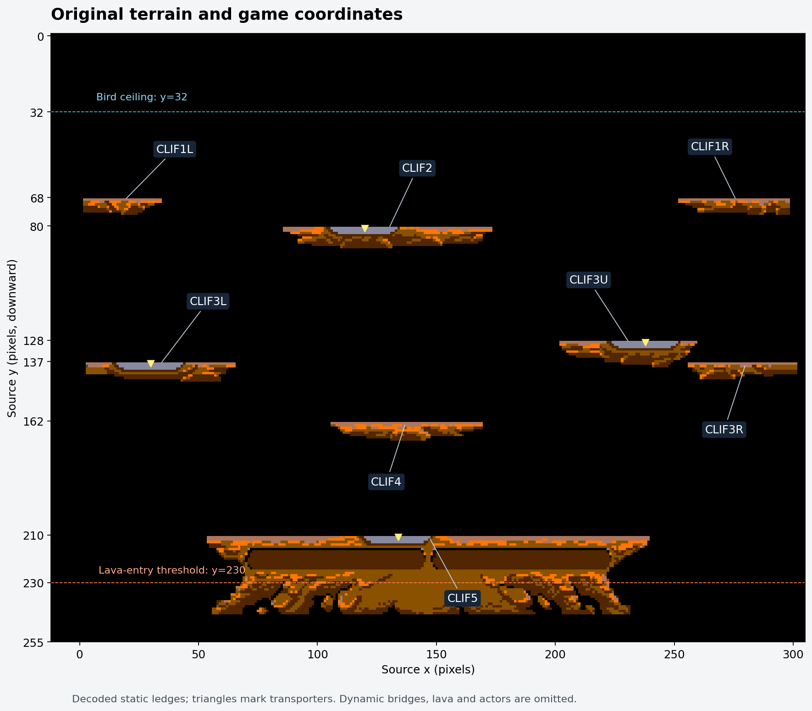
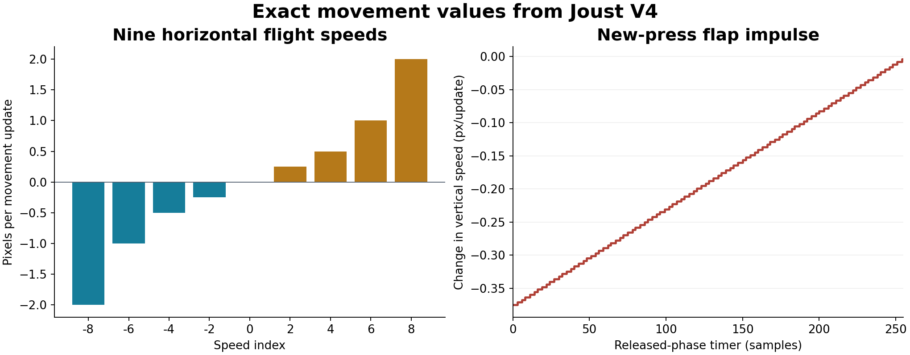
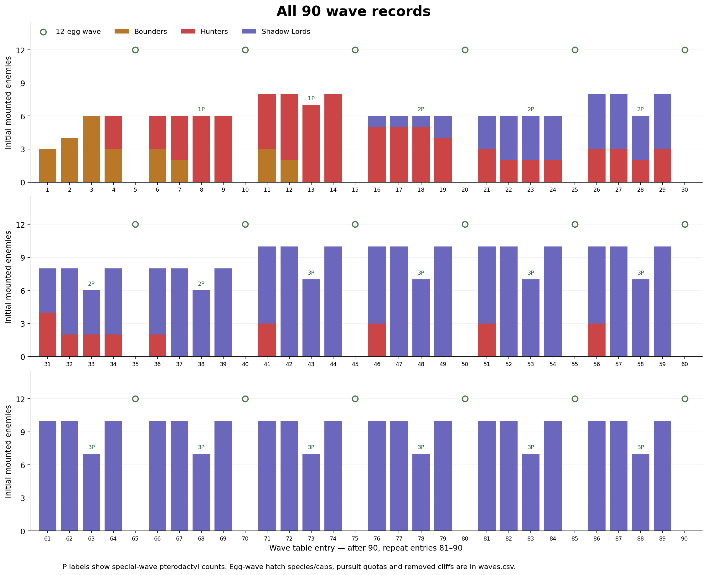
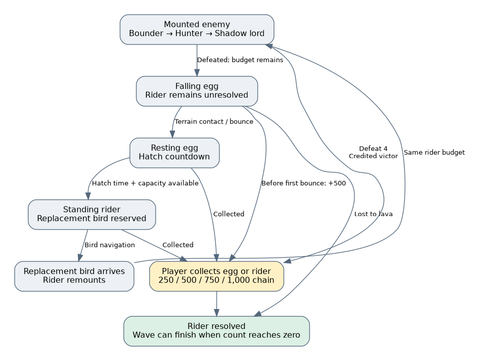
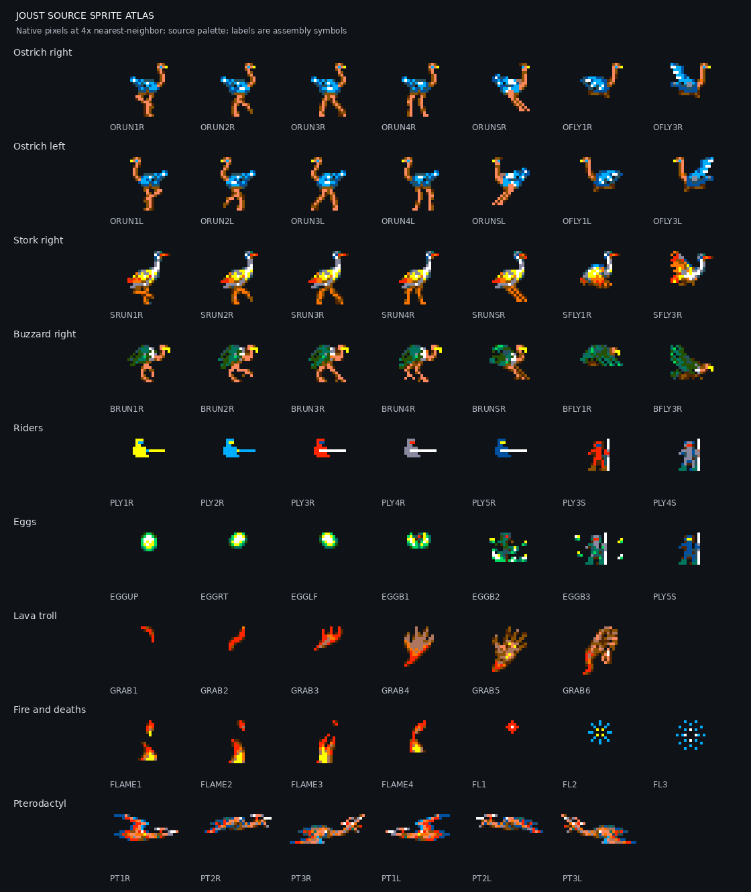
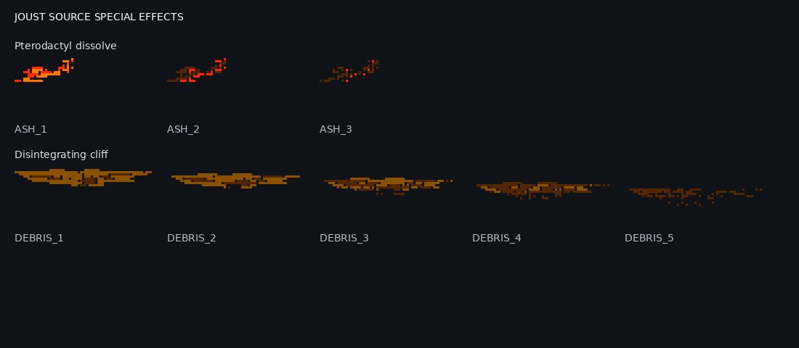
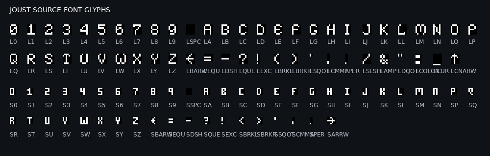
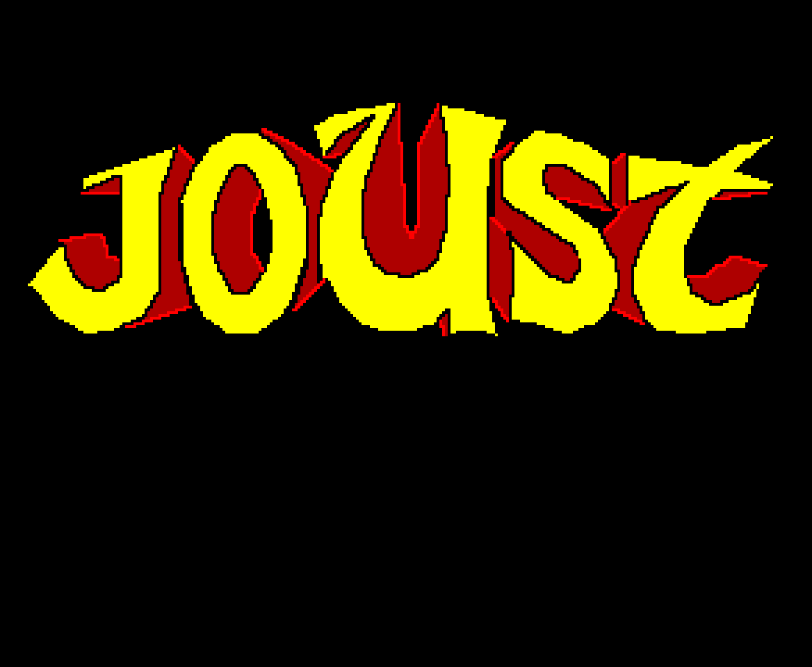

Package home · Graphics and audio catalog · Markdown source
Build a complete, faithful, local one- or two-player Joust for Android TV / Google TV in Kotlin. The game simulation must implement the original rules directly. The delivered graphics, fonts, effects, sound recordings, numeric tables and source references are the implementation material. This is a build primer and asset package, not a completed Android application.
Reference: synamaxmusic/joust, commit
87e22aab945709fa107df609c0efcb839a17c1f9, reviewed 14
November 2026. This repository reconstructs the final revision 4 of
Joust (1982). It is not a 1984 sequel or a modern
reinterpretation. The supplied source snapshot fixes the reference
version even if the upstream repository later changes. Repository
README.
Preserve original movement, collision silhouettes, integer rounding, AI states, wave data, egg behavior, friendly fire, score ordering, respawn protection, art, animation and sound priorities. Retain quirks when they change a visible or playable result. Ground movement is an authored state machine; flying uses discrete impulses and speed choices. A generic physics engine or a continuously steering enemy will not reproduce this game.
Keep Kotlin gameplay code readable: Bird,
Egg, WaveState, PlayerState,
TerrainState, SoundEvent and explicit state
machines are appropriate. The source labels in this document are
evidence anchors and mappings to tables. They are not a requirement to
reproduce the original language, storage layout, processor, graphics
hardware or memory map in the Android app.
Three evidence levels are used throughout:
| Level | Meaning | How the build agent should use it |
|---|---|---|
| Extracted | Literal artwork, table entries, numbers and event records decoded from the pinned source. | Import directly; verify supplied hashes. |
| Reconstructed | Algorithms and transitions translated by reading source branches and arithmetic. | Implement precisely; validate with the named scenarios and source anchors. |
| Port choice | Android controls, lifecycle, display scaling, persistence and implementation structure. | Follow the stated defaults while keeping original game rules intact. |
No playable Kotlin clone, original-game differential replay, or physical-TV input-latency test was executed during this analysis. The verification record identifies what was actually checked. Specific remaining comparison work is listed at the end; the presence of exact data does not establish frame-for-frame equivalence of an implementation that has not yet been written.
START_HERE.md — concise build-agent brief and
completion requirements.docs/JOUST_GAME_SPEC.md — this full specification;
docs/JOUST_GAME_SPEC.html is the illustrated reading
copy.assets/graphics/asset-manifest.json — indexed pixels,
palette, frame offsets, authored collision profiles, fonts and
terrain.data/gameplay_tables.json,
data/physics_tables.json, data/waves.csv —
exact game data.assets/audio/ — decoded sound recordings and their
playback/coverage notes.reference/kotlin/ — small native math and input
reference implementations; these are helpers, not a complete game
engine.reference/source/ — pinned original reference files for
resolving the cited branches and the remaining timing questions.Use source-pixel world coordinates. Positive x is right; positive y is down. Bird x is a left-side reference and bird y is a bottom reference, not a sprite center. Vertical position has a 1/256-pixel fraction. Different frames and species have different visual offsets from this reference; use the animation descriptors. A left-facing sprite cannot be assumed to be a centered mirror of the right-facing sprite. Frame descriptors.
| Item | Required value or interpretation |
|---|---|
| Source drawing canvas | 304 × 256 source pixels. |
| Visible reference crop | x=6…297 and y=7…246 inclusive: 292 × 240 source pixels. |
| Bird horizontal wrap | Reference x in −10…292 inclusive; period 303, independently of image width. |
| Ceiling | Bird bottom y=32; exact clamp/reflect behavior is in the movement section. |
| Lava entry | Candidate bird bottom y≥230 enters sinking; the visible lava surface is separately animated. |
| Player starting references | P1 (100,210) facing right; P2 (200,210)
facing left. |
| Presentation aspect | Use a 4:3 game viewport as the default TV presentation, centered with side bars on a 16:9 panel. Keep a square-source-pixel inspection mode for asset/debug comparisons. |
The crop comes from the maintained original-game reference configuration, not from guessing the bounds of the art: MAME reference at the reviewed revision. The 4:3 fitting policy is a port presentation choice. It never changes simulation coordinates or collision geometry.
For a TV target rectangle of width W and height
H, use viewH=min(H,3*W/4) and
viewW=4*viewH/3, center it, then map the cropped image into
it. Preserve the whole game image; do not fill a 16:9 screen by cutting
away the top or bottom. Turn off bitmap filtering when drawing source
art. Render all world objects on the source pixel grid while retaining
their fractional simulation positions, and perform final scaling only
after composing the frame. Decorative CRT shaders, scanlines and
smoothing are optional display features; the default reference image is
the decoded art.

This figure is a reconstruction from the source artwork, not a
captured gameplay frame. It shows the complete static ledge set and
transporter locations. Bridges, burning fronts, lava animation, actors,
text and wave-dependent cliff removal are dynamic. Use the runtime
landing/solid maps from physics_tables.json; visible
colored pixels are not a substitute for the game’s collision data.
| Terrain | Art top-left x,y | Art size | Standing bird bottom y |
|---|---|---|---|
Top left CLIF1L |
2,69 | 34×7 | 68 |
Top right CLIF1R |
252,69 | 48×7 | 68 |
Upper middle CLIF2 |
86,81 | 88×9 | 80 |
Left middle CLIF3L |
2,138 | 64×8 | 137 |
Upper right middle CLIF3U |
202,129 | 58×11 | 128 |
Outer right middle CLIF3R |
254,138 | 48×7 | 137 |
Lower middle CLIF4 |
106,163 | 64×8 | 162 |
Bottom island CLIF5 |
54,211 | 186×2 top, plus decoded body | 210 |
The four transporter art origins are (106,81),
(224,129), (16,138), (120,211);
each is 28×3. Actor spawning uses the separate spawn reference
coordinates and safety masks in the lifecycle section. Terrain
and transporter data.
Run the simulation independently of the Android display refresh.
Original source comments usually use 60 ticks as one second. The
reference display cadence is 8,000,000/(512*260) =
60.09615384615385 ticks/second, with a tick duration of
16,640,000 ns. Use that duration for the fidelity
default; keep every source delay as an integer number of its specified
ticks or AI calls. Do not rescale a delay of 61 into a guessed “one
second,” and do not run at 120 simulation updates per second because the
TV renders at 120 Hz. Reference
cadence.
A frame accumulator may run zero, one or several fixed steps before rendering. Keep simulation ticks when catching up. When the app leaves the foreground or a controller disconnects, pause deliberately and reset the host-clock accumulator on resume; do not catch up minutes of absent gameplay. This pause behavior is an Android port choice. It does not alter how an unpaused tick behaves.
Not every actor state advances every tick. A delay belongs to the state or actor that owns it. Early enemies, hatching checks, score displays, cliff effects and wave monitoring have different call periods. Preserve countdown decrement-before-test behavior, and use the original update sequence when an actor changes state or creates another actor. The ordering audit below gives the recovered sequencing contract. Scheduler and waits.
| Object | State the native implementation needs |
|---|---|
| Game | Active/attract/game-over state, credits/free-play setting, player count, fixed tick, ordered actor/tasks list, random state, current palette and sound sequencer. |
| Player | Controller assignment, score, reserve/total lives, next extra-life threshold, egg chain, survival deaths, player-kill/bounty flags, active bird and respawn request. |
| Bird | Species, ridden/riderless mode, facing, x integer and horizontal remainder, y in 1/256 pixels, vertical velocity, horizontal speed index, ground/air state, timers, bump displacements, wing/stride frame, collision flag/profile, visual offset and AI state. |
| Enemy rider | Intelligence level, remaining egg budget, pursuit-slot ownership, target slot, targeting timers, movement AI continuation and excursion counters. |
| Egg | Rider identity/intelligence/budget, x/y and velocity, first-bounce flag, resting/hatching/standing state, hatch timer, reserved replacement bird. |
| Wave | Display number, table entry, unresolved riders, active/reserved birds, current/requested pursuing count, introduction/drain state, special callback, baiter index/timer and dynamic difficulty values/countdowns. |
| Terrain | Active cliff flags, mutable landing and solid maps, bridge burn positions, lava display target/current position and troll state. |
Fields are conceptual. There is no need to preserve source storage offsets. There is a need to preserve distinctions such as unresolved riders versus currently mounted enemies, or reserve lives versus total lives including the active bird. State definitions, wave controller.
Keep one shared deterministic random stream. The source draw function
has two unsigned byte state components H and
L. One draw computes:
a = (L >> 3) XOR L
returnedByte = a >> 1
feedback = a AND 1
newH = (feedback << 7) OR (H >> 1)
newL = ((H AND 1) << 7) OR (L >> 1)
returnedBit = L AND 1The old L supplies the returned bit. Source callers use
either the returned byte, its bits, or the final bit; those interfaces
are not interchangeable. Separately, the original clock perturbs the
shared state with H=(H+1)&255,
L=(L-1)&255 at its subframe service points. Visual
effects also consume random draws. Draw
function, clock
perturbation.
reference/kotlin/JoustRandom.kt supplies the draw and
perturb operations separately. The exact interleaving of perturbations,
gameplay calls and cosmetic calls has not been replay-validated here.
Log those events during source comparison, then fix their order in the
native scheduler. Seeding Random.Default once, omitting
visual draws, or swapping this algorithm for a modern generator gives
different enemy/spawn outcomes. A deterministic native replay must store
starting random state, input samples, update ordering and settings.

The following movement section defines how and when to use these values. The impulse curve is the exact integer function, not a fitted physical model.
This audit checks physics_collision.md,
ai_waves_scoring.md, and the gameplay-table extractor
against source commit
87e22aab945709fa107df609c0efcb839a17c1f9. It supplies the
update-order contract and shared random algorithm needed by a native
Kotlin implementation. It does not prescribe an instruction interpreter
or a hardware model.
Keep an ordered, mutable list of gameplay work items. A work item has a category, a continuation state, and a sleep countdown. A bird, an egg, a collision pass, the wave director, and a transient effect are separate work items where the source treats them separately. Drawing can be implemented normally in Kotlin; the required ordering concerns gameplay state, timers, collision eligibility, spawning, and random draws.
The source runs all primary work before secondary work, while keeping one common list. Primary traversal starts at the head each tick. Secondary traversal resumes from its saved predecessor, so a deferred secondary item is not silently skipped or restarted. Within each category, traversal follows the current list order. A sleep countdown is decremented when that item is visited in its category; if it becomes zero, run its continuation until it sleeps or deletes itself. It is not a global timer decremented independently of that item’s visits. A newly created item starts at countdown 1 unless the caller replaces that value. An explicit zero countdown wraps to 255 on the next decrement and wakes on the 256th visit; do not interpret zero as an immediate wake. A01A02
The native ordering contract is:
begin gameplay tick
advance queued sound-event timers
visit primary work from list head in current list order
resume secondary work from saved predecessor in current list order
commit this tick's render state
visit(item, category)
if item.category differs: advance without changing its countdown
item.countdown = unsignedByte(item.countdown - 1)
if item.countdown == 0:
run item.continuation until sleep or removal
sleep(item, count, continuation)
item.countdown = unsignedByte(count)
item.continuation = continuation
continue traversal after item
insertAfter(anchor, newItem)
newItem.next = anchor.next
anchor.next = newItem
newItem.countdown = 1 // unless immediately overriddenThis is a contract for a native task/state model, not a requirement to reproduce the source’s storage layout. Use an explicit linked list or an equivalent structure whose mutations have the same ordering. A snapshot array of all actors taken at tick start changes same-tick spawning. A01A02
The relevant initial list positions are:
| Relative position | Category | Observable effect |
|---|---|---|
Player collision pass PLYCOL |
Primary | Decrement target-immunity delays; resolve player 2/player 1 and player/opponent contacts against positions available before either player’s movement this tick. |
| Player 2, when present | Primary | Sample player 2 input and perform its movement/state continuation. |
| Player 1 | Primary | Sample player 1 input and perform its movement/state continuation. |
Opponent collision pass OPPCOL |
Secondary | Resolve mounted-enemy/pterodactyl pairs before their movement continuations. |
Wave director CIA |
Secondary | Advance wave introduction/cleanup/monitoring; create enemies, eggs, or special-wave controllers at its own list position. |
| Director’s following chain | Mostly secondary | Run enemies, eggs, pterodactyls, and their inserted continuations in current list order. |
Background effects, score-display work, and temporary effects can interleave with these positions; the listed relative gameplay ordering is the important contract. Player 2 precedes player 1 because both are inserted after the same initialization anchor. The later insertion becomes the earlier list node. Player collision detection is created afterward and inserted ahead of both players. Opponent collision detection is inserted before the wave director. These are consequences of creation rules, not player-number priority chosen by the port. Target slots are populated in activation order, so slot 1 is not guaranteed to be player 1; initial simultaneous activation can register player 2 first. A02A03
Do not replace this with “move every actor, then collide,” or “move and collide each actor individually.” In particular, a player collision resolved this tick may change an opponent’s velocity, kill its rider, or create an egg before that opponent’s secondary movement service. A target-delay timer reaching zero in the primary contact pass can make that target eligible for AI later in the same tick. A03A04
There are two operations: create after the currently executing work item, and create after an explicitly chosen actor. Preserve the chosen anchor:
| Event | Exact insertion anchor | Consequence |
|---|---|---|
| Ordinary enemy introduction | Wave director | Newest introduced enemy is earlier in the director’s chain than older surviving enemies. |
| Enemy defeated inside a player collision pass | Defeated enemy | The new egg follows that enemy, although the currently executing work item is the collision pass. |
| Resting egg begins hatching | Egg/rider | Its approaching replacement bird follows the egg. |
| Troll reaches for a bird | Victim’s predecessor | Rear hand precedes the victim. |
| Troll grips a bird | Victim | Front gripping hand follows the victim. |
| Egg air-bonus popup | Ordinary egg-score popup | The extra 500 popup follows the main popup. |
Repeated insertion at a fixed anchor reverses creation order. If a new same-category item lies ahead of the active traversal cursor, its countdown can be decremented and its initial continuation run during this pass. Its initial continuation may itself immediately sleep; “runs this pass” does not mean it necessarily performs a motion update. An item inserted behind a cursor waits for that traversal to return. A primary item created during the secondary pass waits for the next primary pass. A secondary item created during primary work becomes eligible when the secondary cursor reaches it. A02A05
Remove a work item immediately from the live order. If it is the saved secondary predecessor, replace that saved pointer with the surviving predecessor. The current traversal resumes through the surviving predecessor’s next link, so deleting the current item does not skip its successor. Disabling collisions is separate from deleting an actor: riderless mounts, collected eggs, dead pterodactyls, and popups can remain in the list after their contact eligibility is gone. A01A02
PLYCOL searches forward from its own position for a live
player, then pairs that player with each later collision-enabled item.
With both players initially active, player 2 is the first outer
participant. It resolves player 2 versus player 1 once, then player 2
versus following opponents; later it resolves player 1 versus following
opponents. OPPCOL similarly examines later pairs but
filters them to enemy/pterodactyl participants. Eggs are collected
through the player pass, not opponent-versus-opponent contact. A04
Apply each outcome immediately. If the outer participant dies, stop its remaining pairs and resume with the next outer participant. The equal-lance-height player tie also takes this stop-current-participant route despite neither rider dying. A defeated inner participant can still have an animation work item, but its contact-enabled state is already clear. The next pair must see all preceding score, life, rider-count, and eligibility changes. These details affect multiple simultaneous contacts and cannot be replaced by gathering a set of contacts and resolving them in arbitrary order. A04
Primary ticks have the project cadence defined in the main specification. Individual actor delays still matter: early enemies and falling eggs can use delay 2; the director’s monitor uses delay 8; resting eggs use delay 12. These are counts of eligible service visits, not Android presentation frames. AI decisions occur when the bird’s movement continuation calls its controller. A change to an AI continuation may take effect immediately by dispatching into another decision, or on the next controller call; do not impose one automatic transition per tick on every AI state. A01A06
The source can pause the secondary traversal at a deadline and resume it next tick. Thus a secondary sleep count may span extra primary ticks during load. The exact pattern of those deferrals has not been established by gameplay traces in this review. A native implementation can start with one complete ordered secondary pass per fixed tick, but that is an explicit timing baseline requiring comparison, rather than a demonstrated match to every overloaded original frame. Retain a secondary-resume cursor in the design so traced scheduling can be matched without changing game rules. Do not let the Kotlin renderer’s variable frame time decide which AI actors receive service. A01
The game uses one shared two-byte sequence with two outputs per draw:
a value r in 0–127 and a one-bit output b.
Some callers use only the bit; some use r; some combine
them as 2*r+b. A Kotlin Random.nextInt(...)
substitution changes both distributions and later draw order. Use the
included JoustRandom.kt, which is the following pure
arithmetic reconstruction. A07
oldHigh = highByte
oldLow = lowByte
mixed = (oldLow unsignedShiftRight 3) XOR oldLow
r = mixed unsignedShiftRight 1
b = oldLow AND 1
highByte = (oldHigh unsignedShiftRight 1) OR ((mixed AND 1) << 7)
lowByte = (oldLow unsignedShiftRight 1) OR ((oldHigh AND 1) << 7)
return (r, b)A separate time event performs
highByte=(highByte+1)&255 and
lowByte=(lowByte-1)&255. The byte operations wrap
independently; this is not addition of 255 to the combined 16-bit state.
The time event does not reset at wave transitions or new credits. The
seed and the ordering of these events relative to draws must be recorded
for a repeatable native replay. The exact original phase of those time
events relative to every random call is not established here. The
primitive arithmetic is exact; a seed alone does not establish an
identical whole-game sequence. A07
For a simple source check, starting from high=0x12,
low=0x34, one draw returns (25,0) and changes
state to (0x09,0x1A). Applying the time event first changes
the initial state to (0x13,0x33); the next draw returns
(26,1) and leaves (0x89,0x99).
| Consumer | Exact use |
|---|---|
| Pterodactyl creation | One draw; its one-bit output selects left or right entry. |
| Transporter selection attempt | One draw after evaluating occupancy; the bit and the low bit of
r select the first transporter in a fixed fallback search.
Retry attempts consume additional draws. |
| First six egg-wave positions | One draw selects a ledge group via floor(r*12/256);
search backward with wrap for an unused group. Another draw selects a
slot within that group’s width using
floor((2*r+b)*width/256)+groupStart. |
| Last six egg-wave positions | One draw selects floor(r*138/256) in 0–68; search
forward with wrap for an unused slot. |
| First two egg-wave hatch times | Each creation consumes an additional draw. Replace base timer
t with t-floor(r*t/256). These draws are
interleaved with placement, not performed afterward as a batch. |
| Lava bubbles | Consume the same generator. The selected bubble or surface-burst path has different subsequent waits, changing when the next draw occurs. Cosmetic bubble choices therefore influence later gameplay draws. |
The first six egg creations occur one at a time, with a sleep after
each. The extra early-hatching draw happens inside creation before that
sleep. Preserve this draw sequence and avoid shuffling a precomputed
list with a library shuffle. Standard enemy pursuit is state-driven; it
is not implemented as random turns. A separate RADDR
consumer exists only on the failed integrity-check path and is not part
of a valid-source normal game. A08
The two end-of-wave conditions are separate:
NRIDER==0 and enters next-wave
preparation. This happens before baiter countdown or aggression
processing in that iteration.WATWAV waits until the wave
director’s following chain is empty. Departing mounts, pterodactyls,
score popups, and other work can delay this even after there are no
unresolved riders.The director resets both egg-chain counters, resets default caps/delay, increments the displayed wave number, and calls the previous wave’s award callback before advancing to the next wave-table entry. Previous special-wave bonus flags therefore must survive until that callback, then the gladiator flags are cleared. New cliff changes and introductions follow. Do not perform all cleanup at the instant the last enemy mount loses its rider. A09
EGGSCR awards base egg score and the optional air bonus
immediately, then decrements NRIDER, cancels a reserved
approaching bird if present, disables the egg’s contacts, and schedules
the later visual popup path with delay 4. The displayed score popup is
not the time at which points are earned. That remaining popup can still
hold up WATWAV. A10
For a player joust death, disable victim contacts and rider; execute the victim death callback; then award the normal victim value to the victor. Inside the player death callback, reset egg-chain and survival flags, process the first gladiator bounty when applicable, award the victim 50 points, and decrement the auxiliary life total. The 50 can cross an extra-life threshold and prevent a last-life game over. On a gladiator kill, the bounty and normal 2,000 kill score are distinct successive awards. Preserve each threshold check rather than combining all participants’ score changes into a post-tick summary. A11
The following corrections were applied to
ai_waves_scoring.md or sent to the physics author for
integration:
| Item | Correct native behavior | Source |
|---|---|---|
| Seeking versus movement wrap | Replacement-bird seeking compares with period 302; actual bird movement wraps across 303 integer positions. | A12 |
| Last egg auto-collection | The fourth defeat auto-collects the freshly created egg only when a victor exists. A lava death has no victor. | A10 |
| Pterodactyl attack exit window | End the attack for -13 <= savedX-ownX < 13; the
left endpoint is included and the right endpoint excluded. |
A13 |
| Troll gravity | Ordinary fresh-press flap impulse happens first. Captured
integration adds trollPull + (flapReleased?4:0) rather than
ordinary gravity. |
A14 |
| Troll escape position | Shared release always integrates y+=vy. Speed escape
reaches it before integration and moves once; range escape reaches it
after integration and moves twice that update. |
A14 |
| Score rendering | Seven score digits through millions are visible; the next high decimal digit is an overflow marker, not an eighth normal visible digit. | A15 |
The troll double-integration case is especially easy to smooth away
inadvertently. It comes directly from the branch to common release after
the range test. The strict escape threshold remains
vy<-384, and the rising pull endpoint remains
0x501. A14
The following detailed physics descriptions were independently
checked and agree with the source: ordinary 303-position wrapping;
sampled flap edges and held/released gravity; ground takeoff’s distinct
initial lift; profile-row collision rather than visible-alpha collision;
one-sided row scanning after the first horizontal separation; player
versus opponent tie branch asymmetry; normal vertical reflection;
top-of-cliff floor((-vy-1)/2) including vy=0
becoming -1; enemy reserved-slot counting during hatching; and immediate
egg scoring before delayed popup. These are source checks, not executed
full-game replay results. A04A06A10A12A14
extract_gameplay_tables.py is portable and uses only
Python’s standard library. Run it from any directory with explicit
input/output paths:
python extract_gameplay_tables.py --source-dir reference/source --output-dir dataIt now checks the exact source-file SHA-256 before producing
pinned-commit citations. A changed or newline-normalized source file
fails with a clear mismatch error, preventing altered data from being
mislabeled as the frozen revision. The known original
JOUSTRV4.ASM SHA-256 is
bc8b177d44e5bba5e5f9f4687c32c007309d9f476ca0e7f1b67cc413fe409ec3.
Verification copied the script and original input into a fresh
temporary directory, ran using relative input/output paths from that
different working directory, and compared outputs byte-for-byte against
the delivered files. Both matched. A deliberately modified input was
rejected. Results and output hashes are in
extraction_verification.json.
Assertions cover 90 wave records, repeat entry 81, 28 dynamic parameters with ten difficulty periods each, 69 egg positions in eight physical ledge ranges, six placement groups, and the fourteen live V4 baiter timings. Numeric expressions are parsed through a restricted AST evaluator rather than executed. CSV values and JSON tables are extracted; difficulty snapshots are explicitly derived by the source’s signed per-wave update/clamp. On egg-wave rows the encoded enemy counts are hatch-species/capacity selectors, not extra initially spawned mounted enemies; that distinction is now stated in JSON metadata.
| Priority | Specific remaining work for the native implementation | Why it matters |
|---|---|---|
| P0 | Implement the live-list primary/secondary ordering and same-pass insertion rules above before tuning movement. | Changes simultaneous jousts, pursuit-slot acquisition, hatch timing, and new-wave cleanup. |
| P0 | Preserve each AI state’s immediate dispatch versus next-call continuation. Use the detailed state tables together with the bundled named source routines; the prose summaries are not an executable AI implementation. | A one-call delay at each transition changes flap pulse lengths and enemy behavior even with correct constants. |
| P1 | Validate the unusual two-target chooser with source-reference traces at both wrap sides and after a target slot is removed/compacted. | The reconstructed chooser intentionally retains asymmetry; a conventional nearest-target implementation will differ. |
| P1 | Compare secondary-service deferral and actor visit counts in crowded waves to the initial complete-pass native timing baseline. | Original sleep counts are visitation-based and can stretch relative to primary ticks. |
| P1 | Record random state, random calls, and time-perturbation events together; include bubble draws. | Fixed input plus a nominal seed alone is insufficient for an exact original sequence. |
| P1 | Exercise standing-rider collection during the replacement bird’s close-range window, a fourth defeat in lava, and egg collection during same-tick player death. | These combine immediate counters, cancellation, score thresholds, and delayed cleanup. |
| P1 | Exercise the two troll escape routes separately, including a range escape that moves twice. | Generic gravity/integration cleanup can remove this verified behavior. |
| P2 | Compare simultaneous popup overlap shortening and late-wave cleanup visuals after multiple egg catches. | Popup work affects both presentation and the following-chain drain condition. |
These are concrete implementation and validation targets. The extracted static data are complete for the tables they cover, and the arithmetic statements above are source-derived. This review has not executed a complete native game or established frame-identical end-to-end replays; the bundle should not be described as an already validated native clone.
All behavior in this section is derived from commit
87e22aab945709fa107df609c0efcb839a17c1f9. The target is a
native Kotlin game. Source labels make each mechanic traceable.
Use the deterministic fixed gameplay tick specified in the timing section. Keep the order of collision resolution and actor updates stable, including newly spawned actors, because the first resolved contact can kill a participant and cancel its remaining contacts. Human movement updates once per ordinary gameplay tick; source comments conventionally call 60 ticks one second. Model grounded, flying with flap held, flying with flap released, protected spawn, riderless departure, and sinking as explicit gameplay states. P01P04
| Gameplay value | Required meaning |
|---|---|
| Position | Integer source pixels plus vertical and horizontal fractions quantized to 1/256 pixel. Y increases downward. |
| Vertical velocity | Integer units of 1/256 pixel per update. Negative rises, positive falls. |
| Horizontal speed index | One of -8,-6,-4,-2,0,2,4,6,8, selecting the speed table
below. |
| Facing | Left or right, independent of current horizontal momentum while flying. |
| Flap input | Held/released state, with a new press only on released-to-held transition. |
| Flap timer | Number of sampled updates in the current wing-input phase, capped at 255. |
| Ground transition timer | Eight updates between changing ground states. |
| Ground stride timer | Delay until the next animation-dependent horizontal stride. |
| Wing display timer | Minimum down-wing display time, separate from whether a flap impulse is allowed. |
| Horizontal bump remainder | Residual pixel displacement, consumed by at most three pixels per movement update. |
| Vertical bump | Whole-pixel displacement consumed on the next airborne movement update. |
| Lance offset | Zero normally, +2 while skidding; pterodactyl uses -128. |
| Collision enabled | False while protected, before materialization finishes, and after death. |
Preserve 1/256-pixel quantization and floor rounding with Kotlin integers. One subtle transition detail affects the phase of fractional horizontal movement: flight starts with the old ground stride-countdown value as its horizontal remainder. Track this deliberately in a native port instead of assuming the remainder always starts at zero. P03P04P07
Each player has three game inputs: left, right, and flap. Start is separate. The horizontal conversion is:
| Left | Right | Direction |
|---|---|---|
| 0 | 0 | 0 |
| 1 | 0 | -1 |
| 0 | 1 | +1 |
| 1 | 1 | 0 |
Both horizontal directions together are neutral. Holding flap does not produce repeated flaps. For Android, keep the current held state from callbacks and sample it on gameplay updates. Ignore key-repeat for flap impulses. An analog stick supplies direction after a dead zone, not proportional movement speed. P05
Player 1 starts at (100,210) facing right on the
ostrich. Player 2 starts at (200,210) facing left on the
stork. Each player initially waits 60 ticks before consuming its current
life, enabling enemy targeting, and initializing movement. Human
movement then updates once per tick. P06
PLYINT initializes ground state PLYBR,
zeroes vertical velocity, horizontal index, animation and movement
counters, and bump accumulators, and then enables collisions. Ground
movement follows this 13-state table. Inputs in its last three columns
are relative to the current facing, not absolute left/right.
PACCX becomes 8 whenever a transition changes state; a
further state transition is normally deferred until this counter
expires. Remaining in the same state does not reset that counter. Each
state supplies a frame delay, stride behavior, three input-dependent
successors, and a flight-speed index. P04P08
| State | Frame wait | Routine | Reverse input | Neutral input | Forward input | Flight index |
|---|---|---|---|---|---|---|
PLYAR |
8 | REVR |
PLYBR |
PLYBR |
PLYBR |
0 |
PLYBR |
0 | STANDR |
PLYAR |
PLYBR |
PLYCR |
0 |
PLYCR |
8 | RUNR |
PLYGR |
PLYCR |
PLYDR |
2 |
PLYDR |
4 | RUNR |
PLYCR |
PLYDR |
PLYER |
4 |
PLYER |
2 | RUNR |
PLYHR |
PLYER |
PLYFR |
6 |
PLYFR |
1 | RUNR |
PLYIR |
PLYFR |
PLYFR |
8 |
PLYGR |
2 | RUNSR |
PLYBR |
PLYBR |
PLYCR |
2 |
PLYHR |
2 | SKIDR |
PLYKR |
PLYKR |
PLYDR |
4 |
PLYIR |
2 | SKIDR |
PLYJR |
PLYJR |
PLYER |
6 |
PLYJR |
2 | SKIDR |
PLYKR |
PLYKR |
PLYDR |
4 |
PLYKR |
2 | SKIDR |
PLYLR |
PLYLR |
PLYDR |
4 |
PLYLR |
4 | SKIDR |
PLYMR |
PLYMR |
PLYCR |
2 |
PLYMR |
4 | SKIDR |
PLYBR |
PLYBR |
PLYCR |
2 |
Consequences are deliberate requirements: releasing the stick while
running preserves a running state and momentum; reversing must pass
through the source’s deceleration/skid states; REVR
reverses facing; there is no generic acceleration-times-delta-time
calculation. P08
On each grounded update, the program first checks a new flap press,
then evaluates the state transition if allowed, then decrements
PTIMX. A countdown result <=0 runs the state’s stride
routine and reloads its wait. A positive countdown normally leaves
position unchanged, but a nonzero PBUMPX still forces a
horizontal bump move. A state change zeroes PTIMX and
therefore immediately runs the new stride routine. It updates the
nominal PVELX from the state, negating it when facing left.
P04
RUNR is coupled to the animation and footfalls:
| Situation | New PFRAME |
Sprite | Positive-direction pixel stride |
|---|---|---|---|
| Enter running from standing/skid | 4 | RUN1 |
0 |
| Continue from 4 | 3 | RUN2 |
1 |
| Continue from 3 | 2 | RUN3 |
2 |
| Continue from 2 | 1 | RUN4 |
3 |
| Continue from 1 | 4 | RUN1 |
2 |
Thus a sustained four-stride cycle advances eight pixels. At waits 8,
4, 2, and 1 it averages 0.25, 0.5, 1, and 2 pixels per player update.
These averages do not replace the nonuniform strides. When the internal
frame becomes 1, PFEET alternates clip/clop sounds.
RUNSR uses a frame-dependent final stride: for
PFRAME values -1,0,1,2,3,4 the strides are 0,0,2,4,1,1; it
then switches to the standing picture and frame zero. SKIDR
sets frame -1 and moves two pixels each time it is called. Entering skid
starts its sound; entering PLYLR starts the end-of-skid
sound. P08
After a ground move, the standing-support test is
LNDXTB[x] & LNDYTB[y+1] & 0x7f. If zero, the actor
begins falling immediately. An additional CLIF3U test uses
BCKXTB[x+6] & BCKYTB[y]; it forces right-facing and
sets the horizontal bump remainder to abs(oldRemainder)+3.
P04
A new ground flap press only starts flight when the previous-flap
latch is zero. STFLY sets PVELY=-128 (-0.5
pixel/update), decrements integer y by one, clears the vertical fraction
and vertical bump, enters the airborne state with normal gravity, and
starts wing-down setup. This first lift is not an ordinary
ADDFLP impulse. Landing sets the flap latch to one, so
releasing before the next takeoff is required. P04
Walking off a ledge invokes STFALL: y velocity becomes
zero, the vertical fraction and bump are cleared, normal gravity is
selected, wing display hold is set to ten, and the flap timer becomes
zero. The game chooses held/released wing logic from the current flap
switch. It does not add an initial lift simply because the switch
remains held. P04
Airborne updates first sample input, face the current horizontal input if nonzero, increment the flap timer up to 255, and then select held/released behavior. Horizontal input changes facing even when it does not yet change horizontal speed. P07
| Current flight state | Current flap | Effect |
|---|---|---|
| Held/wing-down | Held | Integrate with gravity addition 0. No new impulse. |
| Held/wing-down | Released | Wing-up sound, reset PTIMUP, integrate with gravity
addition 4. |
| Released/wing-up | Released | Integrate with gravity addition 4. |
| Released/wing-up | Pressed | Apply ADDFLP, integrate with gravity addition 0, reset
PTIMUP, start wing-down setup. |
The wing-down display hold is five updates. A quick release may
continue to display a down-wing picture while gravity is already using
released behavior. A press while the display hold is still positive may
show a fake wing-up image for one step before continuing. This display
constraint is not a five-frame cooldown on flap impulses. Literal
FLY2 data exist, but the player chiefly displays
FLY1 and FLY3; do not substitute a generic
interpolated three-frame wing cycle. P04
Let vy be vertical velocity in units of 1/256 pixel per
update; t the released-phase timer at a new press;
j horizontal input in {-1,0,+1}; and q the
horizontal speed index. A flap applies:
impulseQ8 = floor(96 * t / 256) - 96
vy += impulseQ8
candidate = q + 2*j
if -8 <= candidate <= 8:
q = candidateThe coefficient is exactly 96 and the divisor exactly 256. The timer stops at 255. These constants preserve the measured strength of fast versus slow flapping. P07
| Release timer t | Impulse Q8 | Pixel/update delta |
|---|---|---|
| 0 | -96 | -0.375 |
| 1 | -96 | -0.375 |
| 2 | -96 | -0.375 |
| 4 | -95 | -0.37109375 |
| 8 | -93 | -0.36328125 |
| 16 | -90 | -0.3515625 |
| 32 | -84 | -0.328125 |
| 64 | -72 | -0.28125 |
| 128 | -48 | -0.1875 |
| 255 | -1 | -0.00390625 |
t=0 is included as an arithmetic test vector; normal
sampled airborne press transitions have incremented the timer. A single
released sample followed by a pressed sample has t=1
because the release transition resets it after AIROVR. Do
not compute impulse from milliseconds. P04P07
The FLYX table is:
| q | Signed Q8 dx | Pixels per update |
|---|---|---|
| -8 | -512 | -2 |
| -6 | -256 | -1 |
| -4 | -128 | -0.5 |
| -2 | -64 | -0.25 |
| 0 | 0 | 0 |
| 2 | 64 | 0.25 |
| 4 | 128 | 0.5 |
| 6 | 256 | 1 |
| 8 | 512 | 2 |
Only an ordinary airborne press changes q through
joystick acceleration. Facing can therefore point opposite the current
motion. Enemy decisions use the same movement engine with different
input-generating routines. P07P08
Normal gravity and integration use these steps in order:
gravityQ8 = 4 + (flapReleased ? 4 : 0)
vy += gravityQ8
candidateYQ8 = yQ8 + vy + 256*bumpY
bumpY = 0
if floor(candidateYQ8 / 256) <= 32:
bumpY = 1
if vy < 0: vy = -vy
candidateYQ8 = 32*256
if floor(candidateYQ8 / 256) >= 230:
enterLavaState() // Retain previous y for the first sinking frame.
else:
yQ8 = candidateYQ8
horizontalTotal = horizontalRemainder + flightSpeedQ8[q]
dx = floor(horizontalTotal / 256)
horizontalRemainder = horizontalTotal - 256*dx
applyBumpAndWrap(dx)The ceiling condition includes equality. It clamps y to exactly 32, reflects only rising velocity, and schedules a +1-pixel vertical bump for the following movement update. Ordinary player flight has no explicit maximum-rise or maximum-fall velocity clamp. P07P09
WRAPX consumes PBUMPX as a residual
displacement, not velocity with friction. If residual >3, add +3 and
subtract 3 from the residual; if residual <-3, add -3 and add 3 to
the residual; otherwise add the remaining residual and clear it. Add the
resulting displacement to x. P05
The inclusive x domain is [-10,292]. If the result is
>292, subtract 303. If it is <-10, add 303. This is not width 304,
302, or the physical framebuffer width. Boundary examples: x=292 plus 1
becomes -10; x=-10 minus 1 becomes 292. The collision routine itself
uses ordinary coordinate comparisons and does not introduce virtual
cross-seam copies or shortest-wrapped distance. P05P11
CKGND checks landing before solid collision. It
calculates landingMask=LNDXTB[x] & LNDYTB[y]. A nonzero
value selects a landing/lava-troll handler. It does not test the sign of
vy, so the exact candidate maps and ordering determine when
a rising or falling actor can land. It snaps the integer y while
retaining its fractional remainder; STLAN zeroes vertical
velocity and chooses a ground state from FRCONV[abs(q)]. A
zero horizontal speed retains facing; a nonzero speed determines facing.
P10
| Landing bit | Candidate x ranges in template | Candidate integer y | Snapped y | Ground feature |
|---|---|---|---|---|
| 0 | -32…26; 244…319 | 69…72 | 68 | Top left and top right ledges |
| 1 | 77…165 | 81…84 | 80 | Upper central ledge CLIF2 |
| 2 | 193…251 | 129…132 | 128 | Upper part of right-middle ledge CLIF3U |
| 3 | -32…56; 241…319 | 138…141 | 137 | Left/right middle ledges |
| 4 | 97…160 | 163…166 | 162 | Lower middle ledge CLIF4 |
| 5 | 45…230 | 211…227 | 210 | Bottom island CLIF5 after bridge burn |
| 7 | -32…38; 239…319 | 203…255 | No landing | Lava-troll trigger region |
These are ranges of actor reference coordinates, not visible platform
bounds. At game start the code ORs 0x20 into
every x-table entry, making the bottom bridge support
continuous. Burning restores bit 5 from LNDXS3 as it
advances. Cliff destruction removes the relevant bits from runtime x
maps. Bit 6 is unused in the landing data, despite the comment
describing it as lava trolls; the actual data and selection use bit 7.
P10P13P14
Landing speed conversion is |q|=0→PLYBR,
2→PLYCR, 4→PLYDR, 6→PLYER,
8→PLYFR. The source zeroes ground frame/acceleration
counters to force immediate ground service and sets
PTIMUP=1, requiring a release before takeoff. P04
If there is no landing candidate, broad-phase solid collision uses
BCKXTB[x] & BCKYTB[y]. Exact source ranges:
| Bit | Solid feature | Candidate x | Candidate y | Collision profile origin x,y |
|---|---|---|---|---|
| 0 | CLIF1L |
-32…35 | 75…94 | -32,69 |
| 1 | CLIF1R |
235…319 | 75…94 | 252,69 |
| 2 | CLIF2 |
69…173 | 87…108 | 86,81 |
| 3 | CLIF3U |
185…259 | 135…158 | 202,129, using CLIF3R profile |
| 4 | CLIF3L |
-32…65 | 144…164 | -32,138 |
| 5 | CLIF3R |
238…319 | 144…163 | 202,129 |
| 6 | CLIF4 |
89…169 | 169…189 | 106,163 |
| 7 | CLIF5 |
37…239 | 217…255 | 54,211 |
The full source arrays, bit ranges, ground states, and flight
constants are machine-readable in the accompanying
physics_tables.json. These arrays contain 352 x entries
covering -32 through 319 and 256 y entries. Only the 256 gameplay rows
belong in the y map. P12P13
Collision uses an authored horizontal interval on each silhouette scanline. Preserve these source profiles separately from the sprite artwork. Some rows are empty; the profile ends after its last defined row. All three flying ostrich frames share one silhouette for each facing direction; the stork shares the corresponding ostrich profiles. Using every visible nontransparent pixel as the collision mask changes gameplay. P15
The actor’s broad-phase box is:
x range = [x, x + 16]
ground y range = [integerY - 19, integerY]
air y range = [integerY - 19, integerY - 6]A detailed silhouette may contain endpoint x+17 even though the broad-phase right edge is x+16. Keep both the box and the row intervals exactly as authored. Skidding changes lance height by +2. P04P15
After broad-phase overlap, align the two profiles by their top-row
difference. Let first-profile interval be [a,b], second be
[c,d], and horizontal displacement dx=x2-x1.
Endpoint equality counts as contact. Preserve this scan algorithm,
including its directional mode:
mode = BOTH
for each aligned row from top to bottom:
if either profile has ended: return NO_CONTACT
if mode == BOTH:
if either row is empty: continue
if b < c + dx:
mode = CHECK_RIGHT_AGAINST_LEFT
continue
if a > d + dx:
mode = CHECK_LEFT_AGAINST_RIGHT
continue
return CONTACT_AT_THIS_ROW
if either row is empty: return NO_CONTACT
if mode == CHECK_RIGHT_AGAINST_LEFT and b >= c + dx:
return CONTACT_AT_THIS_ROW
if mode == CHECK_LEFT_AGAINST_RIGHT and a <= d + dx:
return CONTACT_AT_THIS_ROW
return NO_CONTACTOnce the first horizontal gap is found, subsequent rows check only that boundary. Keep the first contact row for platform-response classification. This source-specific scan is cheap in Kotlin and removes the need to guess whether a generic polygon or bitmap collision routine is equivalent. P11P12
For a platform hit, let actorRow and
cliffRow be the first contacted profile rows. Let
nearBirdBottom mean at least one of the next four actor
rows is empty or beyond the silhouette, and cliffEndsNext
mean the next cliff row is empty or beyond the profile. Let
M=(cliffLeft+cliffRight)-(birdLeft+birdRight)+2*dx at the
contact row. Use these platform classifiers:
| Platform | First test | Next test | Remaining side decision |
|---|---|---|---|
CLIF1L, CLIF3L |
If cliffRow==0 && nearBirdBottom, top
bounce. |
If cliffEndsNext, underside bounce. |
M<0: rightward side bounce; otherwise underside bounce. |
CLIF1R, CLIF3U |
If cliffRow==0 && nearBirdBottom, top
bounce. |
If cliffEndsNext, underside bounce. |
M>=0: leftward side bounce; otherwise underside bounce. |
CLIF3R |
If actor integerY<=147 and nearBirdBottom, top
bounce. |
If cliffEndsNext, underside bounce. |
M>=0: leftward side bounce; otherwise underside bounce. |
CLIF2, CLIF4, CLIF5 |
If cliffRow==0 && nearBirdBottom, top
bounce. |
If cliffEndsNext, underside bounce. |
M>=0: leftward side bounce; otherwise rightward side bounce. |
Evaluate these tests in the listed order. When a nonzero candidate mask contains more than one bit, preserve these exact dispatch rules; do not simply iterate every set bit:
selectLanding(mask):
if mask < 8:
if mask == 2: return landingBit1
if mask > 2: return landingBit2
return landingBit0
if mask == 8: return landingBit3
if mask < 32: return landingBit4
if (mask & 32) != 0: return landingBit5
return trollTrigger
selectSolid(mask):
if (mask & 128) != 0: return solidBit7
if mask < 8:
if mask == 2: return solidBit1
if mask > 2: return solidBit2
return solidBit0
if mask == 8: return solidBit3
middle = mask & 112
if middle > 32: return solidBit6
if middle < 32: return solidBit4
return solidBit5Runtime platform removal changes the candidate maps, not the authored profile. A rectangle’s minimum-penetration normal is not equivalent to these classifiers. P10P12
Only collision-enabled actors enter contact resolution. Preserve the original stable actor ordering. If the current outer participant dies, skip its remaining pairs. The player tie path also ends that participant’s remaining pair checks for the current pass, despite neither rider dying. P11
Resolve pairs as follows:
| Pair | Outcome family |
|---|---|
| Player and egg | Collect egg; no height contest. |
| Player and player | Lance-height contest, including normal friendly fire. |
| Player and ridden buzzard | Lance-height contest. |
| Player and pterodactyl | First test narrow mouth kill; otherwise lance-height contest with pterodactyl’s artificial high lance. |
| Opponent and opponent, including buzzard/pterodactyl | Bounce without killing one another. |
For an ordinary joust, compare integerY + lanceOffset.
The smaller value wins. Fractional y is not part of this comparison.
Equal values cause a thud and a bounce without death. Skid lowers the
lance by two pixels. The pterodactyl uses a lance offset of -128, so it
usually wins the ordinary height comparison. P11P16
The pterodactyl-mouth exception occurs only after silhouette contact. For the player U and pterodactyl X:
relative = player.integerY + player.lanceOffset - ptero.integerY
if ptero.pose == 2: // Third of its three poses
require abs(relative - 8) <= 3
else:
require abs(relative - 10) <= 2
require player.facing != ptero.facing
if ptero.x - player.x < 0:
require player faces left
else:
require player faces rightPassing kills the pterodactyl and bounces the player away. Failure falls through to the ordinary lance comparison. The three-pixel tolerance makes a seven-row window; the two-pixel tolerance makes a five-row window. Do not implement “any frontal hit kills pterodactyl.” P11
On a joust kill, disable the victim’s collisions, remove its rider, start riderless departure, invoke its death effects, and award its specified value to the victor. The mount remains and departs under its movement logic; an immediate whole-sprite deletion loses original behavior. P11
For ordinary bird separation, the selected top actor receives
PBUMPY=-2; if it was falling (vy>0), its
new velocity is floor(-vy/2). The selected bottom actor
receives PBUMPY=+2; if it was rising
(vy<0), the same negation-and-halving converts it
downward. Existing velocities already going outward are retained. P11
For horizontally separated actors, identify physical left and right
from COLDX:
if left.q > 0: left.q = -left.q + 2
if right.q < 0: right.q = -right.q - 2
right.bumpX = arithmeticShiftRight(-left.q + 2, 1)
left.bumpX = arithmeticShiftRight(-(right.q + 2), 1)
left.faces = LEFT
right.faces = RIGHTKeep the source’s update order when deriving each actor’s displacement from the other. If x positions are equal, no horizontal response is applied. Opponent-versus-opponent ties select the first actor as the upper participant; an ordinary player joust tie selects the second actor as the upper participant. Keep this deterministic tie rule rather than choosing randomly. P11
The pterodactyl/bird no-kill response moves only the bird: compare
the sum of the two rough y bounds to determine up/down, use the same
velocity reflection helpers, then overwrite vertical bump with ±5.
Horizontal direction is chosen from the sum of the two x bounds; the
bird is faced outward and an inward q is reflected with the
source’s two-index loss. Its residual horizontal bump is literally
-2*pterodactyl.q. Preserve that expression even where a
generic separation impulse would look more natural. P11
For background contact:
| Source route | Exact change |
|---|---|
BCRIT |
If q<0, q becomes -q-2. Set bumpX=q+6, then limit upward vy to at least -64 and set bumpY=+2. |
BCLFT |
If q>0, q becomes -q+2. Set bumpX=q-6, then limit upward vy to at least -64 and set bumpY=+2. |
BCBOT |
If vy<0, set vy=floor(-vy/2). Set bumpY=+2. |
BCTOP |
If vy>=0, set vy=floor((-vy-1)/2). Set bumpY=-2. If
q==0, select q=-2 or +2 from the contact midpoint test. |
All routes produce the cliff-thud sound. Top contact at vy=0 produces -1 in 1/256-pixel velocity units. Keep this one-unit bias when implementing the bounce. P12
Normal flight reaches the sinking state when the candidate integer y
is >=FLOOR+7=230. This check precedes storing the
candidate y and precedes x movement, so the first sinking frame starts
from the previously stored y. The program writes the actor clipped at
FLOOR+1=224, waits three ticks, erases it clipped, and
checks whether the rider has begun to disappear. Only then does the
rider die, with no victor. It increments integer y once per sinking
cycle, continues until y>=244, waits 30 ticks, and invokes the
recreate callback. P07
The troll trigger is table-driven and only creates a troll if
TTROLL==0, no troll is already allocated, and the actor is
a live player or enemy. A continuing troll target must remain airborne
and at y>=198, and its x must satisfy x<=42 or x>=242. On
capture, use the troll gravity rule below. P10P17
While captured:
bumpX = 0; bumpY = 0; q = 0
vy += trollGravity + (released ? 4 : 0)
if vy < -384: releaseTroll()
else:
yQ8 += vy
if integerY >= 230:
terminateTrollAndSink()
return
x = clamp(x, 8, 278)
if victimNoLongerInTrollRegion: releaseTroll()
releaseTroll():
awardEscapePointsIfAlive()
releaseHandAndRestoreNormalGravity()
yQ8 += vyThe break-free test is strictly less than -384 (-1.5 pixels/update).
Flaps still apply their normal impulse before this gravity path.
Successful release while alive awards 50 points and restores normal
gravity. The release path always adds the current vy to y
once. A speed-triggered escape therefore integrates y once in total; an
escape triggered by leaving the valid region integrates twice in
the same update, because the first integration has already
occurred. Preserve that visible displacement. A captured actor that
sinks has also already stored its new y, unlike ordinary flight’s
sinking transition. Capture initializes a 1,800-tick timer and copies
dynamic LAVGRA into CLVGRA. After expiration,
the separate hand process increases CLVGRA by one Q8 unit
each update until it has reached 0x501: the update at
0x500 still increases it once. P07P17P18
Each human has a remaining-reserve counter and an auxiliary counter that includes the active life. The reserve count is decremented when starting/respawning; the auxiliary count is decremented when dying. Keeping only one counter risks early/late game-over and incorrect UI icons. The original icon row shows at most five reserve icons; the life count caps at 255. P19
A player death resets that player’s egg-chain counter, marks death
for survival-wave scoring, schedules baiter removal with integer
5*60/8=37, awards the dying player 50 points, creates the
death effect, plays its sound, and removes the player from the two
AI-target slots. If both auxiliary life counters are zero, game-over
begins. Otherwise the surviving player’s game continues; a
player-specific game-over message runs for integer
3*60/8=22 groups of eight ticks. If a player is killed by
an opponent during the early waves while TTROLL is still
nonzero, EMYTIM becomes 2, slowing enemy movement; player
timing remains 1. P20
After a normal joust death, the riderless mount follows
AUTOFF, selecting target flight lines y=69,129,208. It
heads in its facing direction, alternates brief flap inputs as needed,
and departs when x<-7 or x>289. It erases itself, waits 60 ticks,
sets x=150, and invokes the recreate callback. This means the time to
respawn depends on the mount’s departure, not a universal fixed death
timer. P21
CREP1/CREP2 consumes a reserve life. If no
reserve is available, that player is finished. Otherwise the player
takes a queue ticket. Players have priority over enemy transporter
requests. On each tick the front player first prefers an entirely empty
vertical region: bottom transporter, then right/left middle, then top.
If that fails, all active objects are tested against
transporter-specific safety intervals after a speed-dependent
predicted-x adjustment. Non-hatching eggs with no requested bird are
ignored. Transporters disabled or in use are excluded. P22
| Transporter | Spawn x | Spawn y |
|---|---|---|
Top TR1ID |
113 | 80 |
Right middle TR2ID |
231 | 128 |
Left middle TR3ID |
23 | 137 |
Bottom TR4ID |
127 | 210 |
Speed prediction uses q-indexed offsets
[-60,-30,-15,-8,0,8,15,30,60]. Its predictor wrap adjusts
by ERIGHT-ELEFT=302, unlike movement’s period 303. Do not
normalize those two constants. The player safety interval uses ±90
pixels around each transporter plus the stated 14-pixel actor allowance;
enemies use asymmetric 66/39-pixel allowances. After the source’s
TRSMALL countdown reaches zero, players use the smaller
enemy safety intervals. If no completely empty region exists, a random
starting transporter is selected and a fixed fallback sequence searches
the available transporters. P22
The transporter materializes for 30 one-tick steps, revealing the
figure with the original clipped-height and solid-color effects. The
actor remains noncollidable. Then it waits for either a nonzero
direction or pressed flap or inactivity timeout. PFEET
starts at 32 and is immediately halved to 16; successive 75-tick phases
halve it 8,4,2,1,0, giving 375 more ticks before automatic release.
Exact blinking/color sequencing comes from
TREPL1/TREPL2, PLANTZ,
PACCX, and PTIMX. A held input can end the
protected wait immediately, because the old edge-only checks are
commented out. On exit, the transporter is freed, targeting is enabled,
PLYINT restores a live collision state, and the
already-sampled input is processed. P22P23
Both players occupy the same arena simultaneously, with independent
controls, scores, reserve/auxiliary lives, egg-chain counters, and death
flags. They collide and can kill one another in normal play. Ordinary
player kills award 2,000 points through the player decision table’s
DVALUE=0x20 and SCRHUN. The dead player also
gets the normal 50-point death award. The stork uses distinct artwork
but shares the ordinary physics and ostrich collision silhouettes. P06P15P20P22
A gladiator wave arms one bounty for the first player-on-player kill.
That kill awards an additional 3,000 points and records which player
won. This is additional to normal kill scoring. Later kills in the same
wave do not retrigger it. The final-release PATC11 clears
these triggers at game start so an old game’s gladiator state does not
leak. Cooperative/survival scoring must use these per-player kill/death
flags and the exact wave callbacks, not disable friendly fire. P20P24
These are behavioral acceptance cases, not claimed runtime-tested recordings. Compare a Kotlin implementation against the original game using recorded inputs, screenshots, and per-tick movement expectations:
CLVGRA=0x501.This section specifies the final version 4 rules of the
1982 arcade game for a native Kotlin implementation.
Preserve the revision 3 and 4 gameplay changes, especially pterodactyl
targeting and lava-troll pull. Unless explicitly marked as derived,
constants and transitions come from the cited source at commit
87e22aab945709fa107df609c0efcb839a17c1f9. Durations are
simulation visits, independent of Android display frames; primary and
secondary update order and sleep visitation rules are specified in the
scheduling audit. Parenthetical seconds use the game’s nominal 60 ticks
per second; tick counts are authoritative.
The associated gameplay_tables.json contains all 90 wave
records, all 28 dynamic adjustment records, all 69 egg wave positions,
the baiter timing table, and derived default difficulty snapshots.
waves.csv provides the complete human-readable wave
inventory. These decoded data can directly initialize the native game
and serve as regression oracles.
NSMART counts currently pursuing riders and
WSMART sets the requested number. When a patrolling enemy
sees fewer pursuers than the requested quota, it claims a slot, marks
itself pursuing, and runs its pursuing decision immediately. Which enemy
claims the slot depends on entity update order. A remount promotes the
rider independently of this quota.NRIDER counts unresolved enemy riders, including eggs
and standing riders. NENEMY counts active and reserved
birds. A wave ends when NRIDER == 0, not when there are no
flying mounted enemies.Sources: decision records, line tracking and promotion, enemy defeat, wave monitor.
| Setting | Exact source value | Behavior |
|---|---|---|
| Lives per credit | $05 packed BCD |
5 lives |
| Extra life interval | $20 packed BCD |
Every 20,000 points |
| Master difficulty | $05 |
Difficulty 5, middle starting band |
| Initial gravity | 4 | Shared normal gravity increment |
| Bridge countdown | 3 | Bridges start burning at entry to wave 3 |
| Troll countdown after bridges | 1 | Troll becomes eligible at entry to wave 4 |
| Initial enemy movement wait | 1 | Later set to 2 during wave 1 and 2 enemy creation |
| Player target delay | 90 ticks | Newly active players are not immediately valid AI targets |
| Initial lava display level | $EA = 234 |
Per-wave target rises by 5 until $E0 = 224 |
| Transporter safety narrowing countdown | 13 | Decremented on inter-wave entry; narrow safety table is used when it reaches 0 |
| Dynamic adjustment countdowns | 2 | The first scheduled adjustment occurs entering wave 3 |
TB12REV3.ASM factory settings, rather than a remembered
arcade configuration, define the reference configuration. The live
on-screen lives icon count is capped at five visible icons, although
internal lives can exceed five. INCLIV saturates the
auxiliary life total at 255. Distinguish reserve lives from the total
lives including the active bird; their decrements happen at different
lifecycle stages.
Sources: factory values, game initialization, life increment.
Each dynamic parameter specifies three starting values, one final value, an increment, and ten wave intervals. Starting values apply to difficulty bands 0–3, 4–6, and 7–9. The wave interval is selected by the exact difficulty 0–9. Keep a value and an independent countdown for each parameter.
Initialization selects the difficulty band and sets every countdown to 2. At each transition after wave 1, decrement a nonzero countdown. If the result is zero, reload the selected difficulty nibble and apply the signed increment with the original signed clamp:
if increment >= 0:
candidate = signed16(value + signed8(increment))
value = candidate if candidate < signed16(endpoint) else endpoint
else:
candidate = signed16(value + signed8(increment))
value = candidate if candidate > signed16(endpoint) else endpointDo not reinterpret this as a distance-to-endpoint step. For example,
HUUPVY and SHUPVY use increment
$20 with endpoints more negative than their initial values.
The positive-increment clamp jumps them to the endpoint on the first
adjustment. That is the V4 gameplay behavior. A zero period, if supplied
by modified data, would cause an update at every following wave; all
shipped nibbles here are nonzero.
In the table below, values are signed integers in each parameter’s native units. Velocity and excursion values use 1/256-pixel units; ranges use pixels, and delays use the AI or timer calls described in their respective sections. Period columns list difficulties 0–9 in order. Source symbols are retained only to identify the corresponding constants.
| Parameter | Start 0–3 | Start 4–6 | Start 7–9 | Increment | Final value | Wave intervals at difficulties 0–9 |
|---|---|---|---|---|---|---|
LAVTIM |
11 | 6 | 4 | -1 | 1 | 15, 10, 8, 6, 4, 4, 3, 3, 2, 1 |
LAVGRA |
4 | 6 | 8 | +2 | 45 | 15, 10, 8, 6, 4, 3, 3, 3, 2, 1 |
LNTLAV |
16 | 8 | 4 | -1 | 1 | 15, 10, 8, 6, 4, 4, 3, 3, 2, 1 |
EGGWT |
96 | 64 | 32 | -2 | 16 | 15, 15, 12, 10, 8, 6, 4, 3, 2, 1 |
EGGWT2 |
94 | 56 | 34 | -4 | 8 | 12, 10, 5, 3, 10, 5, 2, 5, 2, 1 |
BODNRG |
14 | 14 | 12 | -1 | 11 | 15, 15, 15, 15, 15, 15, 15, 8, 4, 2 |
BODNDI |
-4096 | -3584 | -2048 | +32 | -256 | 4, 2, 1, 1, 4, 2, 1, 4, 2, 1 |
BODNVY |
128 | 256 | 512 | +32 | 768 | 4, 2, 1, 1, 15, 8, 1, 3, 2, 1 |
BOUPRG |
-15 | -14 | -12 | +1 | -11 | 15, 15, 15, 15, 15, 15, 15, 8, 4, 2 |
BOUPDI |
4096 | 3584 | 2048 | -32 | 256 | 4, 2, 1, 1, 4, 2, 1, 4, 2, 1 |
BOUPWD |
3 | 2 | 1 | -1 | 1 | 15, 10, 8, 6, 4, 4, 3, 3, 2, 1 |
BOUPWU |
10 | 8 | 6 | -1 | 2 | 15, 10, 8, 6, 4, 4, 3, 3, 2, 1 |
BOLETM |
32 | 21 | 16 | -1 | 2 | 7, 7, 6, 6, 4, 4, 3, 3, 2, 1 |
HUDNRG |
15 | 14 | 12 | -1 | 11 | 15, 15, 15, 15, 15, 15, 15, 10, 2, 2 |
HUDNDI |
-4096 | -3584 | -2048 | +32 | -256 | 15, 15, 15, 15, 15, 15, 8, 4, 2, 2 |
HUDNVY |
256 | 512 | 768 | +32 | 896 | 15, 15, 15, 15, 15, 15, 8, 4, 8, 4 |
HUUPRG |
-15 | -14 | -12 | +1 | -11 | 15, 15, 15, 15, 15, 15, 15, 8, 2, 2 |
HUUPDI |
4096 | 3584 | 2048 | -32 | 256 | 15, 15, 15, 8, 15, 15, 8, 4, 2, 2 |
HUUPWD |
3 | 2 | 1 | -1 | 1 | 15, 15, 15, 8, 15, 15, 8, 3, 2, 2 |
HUUPWU |
10 | 8 | 6 | -1 | 2 | 15, 15, 15, 8, 15, 15, 8, 3, 2, 2 |
HUUPVY |
-128 | -256 | -512 | +32 | -512 | 15, 15, 15, 15, 15, 15, 8, 4, 8, 4 |
HULETM |
32 | 21 | 16 | -1 | 2 | 15, 15, 15, 8, 8, 4, 3, 3, 2, 2 |
SHDNRG |
20 | 16 | 14 | -1 | 12 | 15, 15, 15, 15, 15, 15, 15, 10, 8, 2 |
SHUPRG |
-20 | -32 | -14 | +1 | -12 | 15, 15, 15, 15, 15, 15, 15, 10, 8, 2 |
SHUPVY |
-16 | -512 | -768 | +32 | -1024 | 15, 15, 15, 15, 15, 15, 15, 10, 8, 4 |
SHUPTM |
20 | 10 | 8 | -1 | 2 | 15, 15, 15, 15, 15, 15, 15, 10, 8, 2 |
SHLETM |
32 | 21 | 16 | -1 | 2 | 15, 15, 15, 15, 15, 15, 15, 10, 8, 2 |
SHCLTM |
10 | 8 | 6 | -1 | 2 | 15, 15, 15, 15, 15, 15, 15, 10, 6, 1 |
Initial difficulty-5 semantics: troll animation 6 ticks/frame, pull
increment 6, AI troll check interval 8 calls, normal egg wait 64 × 12
ticks, egg-wave wait 56 × 12 ticks (halved before assignment with two
living players), bounder/hunter long ascent/descent excursion magnitude
14 pixels in 8.8 units, bounder level reconsideration 21 calls, hunter
level reconsideration 21 calls, shadow lord short-range target
reconsideration 10 calls. The PJOY state and its counter
ordering determine the exact number of calls; do not turn these
descriptive values into new real-time timers.
Sources: record layout and macro, initialization, per-wave adjustment, all dynamic values, RAM layout.

Each wave specifies bounder, hunter and shadow-lord counts, a
pursuing-enemy quota, whether pursuit begins during introduction, a
special-wave mode, a special-wave pterodactyl count, and which cliffs
are removed. The complete decoded configuration is in
gameplay_tables.json and waves.csv.
For egg waves, the species counts instead select the hatch species and concurrent hatch limit. If hunters are listed, use hunters; otherwise use bounders if listed; otherwise use shadow lords. The chosen count is the maximum simultaneous active/reserved birds. Every egg wave initially places 12 eggs, regardless of this limit.
The six modes are ordinary, first-wave introduction,
team-or-survival, gladiator, egg, and pterodactyl. Wave-specific removed
cliffs can be CLIF1L, CLIF1R,
CLIF2, and CLIF4. CLIF3U,
CLIF3L, CLIF3R, and the central part of
CLIF5 remain outside that removal configuration.
The main wave sequence is:
IWAVE: decrement transporter narrowing countdown,
update all dynamic difficulty records, and raise the lava target if
permitted. Initial wave 1 starts at IWAVE2 instead.WSMART,
WENEMY=255, and EMYTIM=1.WAVDEL, then
WATWAV waits for previous wave processes to drain. It is
not sufficient to observe NRIDER==0 and spawn
immediately.WCREATE sleeps 61 ticks before each spawn,
increments NENEMY and NRIDER, sets the species
and buzzard image, sets egg budget 4, and starts nonpursuing. It sets
EMYTIM=2 if TBRIDGE!=0.WBEGIN installs the wave’s pursuing quota for a running
game even when early-pursuit status was clear. Thus early pursuit
controls pursuing behavior during introduction, not
whether that wave ever pursues. Initialize baiter timers and begin the
8-tick wave monitor.NRIDER==0 first. Only
with at least one NENEMY does it decrement the
112-iteration aggression counter. At expiry, increase
WSMART, saturating at 255, then reset 112. This is 896
ticks, approximately 14.93 seconds of counted iterations, rather than
exactly 15 seconds.The complete wave table is in waves.csv and
gameplay_tables.json. The final row is the 90th entry even
though its source comment incorrectly repeats WAVE 80.
Sources: wave schema, controller and spawning, all 90 entries, special dispatch.
| Wave type | Entry conditions and behavior | Award |
|---|---|---|
| Team | The type-4 routine finds both auxiliary life totals nonzero. It
clears PLYG1/2, tracks player-on-player kills, and
evaluates both flags at completion. Enemy-inflicted deaths alone do not
cancel this team award. |
3,000 to each player who still has lives if neither player killed the other during the wave. |
| Survival | Type-4 routine finds either player out of lives. It clears
PLYD1/2. At completion the remaining player must still have
lives and must have had no deaths. |
3,000 to the surviving qualifying player. |
| Gladiator | Type-6 routine runs only if both players have lives at entry. It
sets both PLYG flags to $FF. The first
player-on-player kill wraps the winner’s flag to zero, triggering the
bounty; then both triggers are cleared and the winner is marked
$80. |
3,000 bounty in addition to the normal 2,000 player kill score, for 5,000 on the first qualifying kill. Later player kills score the normal 2,000. |
| Egg | Type-8 routine creates 12 eggs at source-defined legal positions. It uses the wave record for hatch species, concurrent hatch cap, and pursuing quota. | Ordinary egg-chain scoring, including collection of standing riders. |
| Pterodactyl | Type-10 routine creates a secondary PTERWV controller
after the introductory delay and prior-process drain. It sleeps 65 ticks
before each of the entry’s 1, 2, or 3 pterodactyls; the final controller
itself becomes the last pterodactyl. Normal riders are also
introduced. |
1,000 per killed pterodactyl. |
A player death resets that player’s egg chain and increments their
survival death counter before other death processing. Player-on-player
kill counters follow the victor’s DGLAD pointer; they are
not indexed by the victim. At the next wave the previous wave’s award
callback runs before the old gladiator flags are unconditionally
cleared.
Sources: team and survival, gladiator setup and completion, bounty award inside death, normal kill award after death callback.
LINET selects one of three target bottom-coordinate
lines: 69 ($45), 129 ($81), or 208
($D0). The branch boundaries are 101 and 161 because the
line selection adds $20. It always commands its facing
direction. If below the selected line and not already rising, it
produces a one-call flap and installs LNTOFP to release
flap on the next call. At LNTLAV-spaced checks it also
notices a troll immediately preceding it in the linked process list and
starts an upward flap.
A player becomes a target at STPLY1/STPLY2, with a
90-tick target delay. PLYCOL decrements the target delays
once per tick. On death, the first target slot is compacted from the
second slot and the corresponding remaining delay is copied. These are
transient active-bird pointers, not fixed player numbers.
The original two-player target selector is not a conventional Euclidean, Manhattan, or wrapped-distance nearest-player test. Its integer comparisons contain asymmetries. For fidelity use the reconstructed selection function below and verify it against two-player replays, especially across the wrap seam. Do not silently substitute a nearest-distance calculation.
// p1/p2 are the active target slots, in registration order.
// Ineligible targets have a nonzero target-delay timer.
fun chooseTarget(self: Bird, p1: Bird?, p2: Bird?): Bird? {
if (p1 == null) return null
if (p1.targetDelay != 0) {
return p2?.takeIf { it.targetDelay == 0 }
}
if (p2 == null || p2.targetDelay != 0) return p1
fun u8(v: Int) = v and 255
fun u16(v: Int) = v and 65535
fun xComparison(player: Bird): Int {
val px = u16(player.x)
val sx = u16(self.x)
val delta = u16(px - sx)
return if (px >= sx) u16(-delta - 2) else delta
}
var firstMetric = u8(-kotlin.math.abs(p1.bottomY - self.bottomY))
val firstX = xComparison(p1)
if (firstX < 256 && firstX <= firstMetric) firstMetric = firstX
return if (u8(xComparison(p2)) < firstMetric) p1 else p2
}This function preserves the effective original selection result, including its asymmetric x comparison. It is a source-derived reconstruction requiring differential confirmation, rather than a newly designed targeting rule.
Source: line tracking, target selection, target registration and removal, target countdown.
The exact routines occupy BOUNDR through
BOLAV4. DYLEN=14. PPOSY is the
integer bottom position used for target separation; PVELY
and long excursion PDIST are 8.8 signed quantities. Default
difficulty-5 initial values are range +14/−14 pixels, excursion
−3584/+3584 raw (−14/+14 pixels), downward limiting velocity +256 raw (1
pixel per movement), wings down 2 calls, wings up 8 calls, and level
reconsideration 21 calls.
| Routine group | Exact control role |
|---|---|
BOUNDR |
Check for troll on LNTLAV cadence, select target,
compare vertical integer separation. No valid target or separation
inside [BOUPRG,BODNRG) goes to level behavior. Larger
positive separation descends; more-negative separation ascends. |
BODN/BODN1 |
Set negative excursion budget BODNDI. While descending,
add positive PVELY to it until it reaches or crosses zero;
landing also returns to the brain. If fall velocity reaches
BODNVY, begin a 2-call flap pulse. |
BODN2 |
Continue accounting for descending displacement, hold flap while the
timer is positive, then release and return to BODN1. |
BOUNUP/BOUP |
Check BCKXTB[x] & BCKYTB[y−14]; if blocked, use
level behavior. Otherwise set positive excursion BOUPDI and
begin ascent pulses. |
BOUP1/BOUP2 |
Account for negative PVELY until the positive excursion
goes negative. Alternate BOUPWD calls flap-held and
BOUPWU calls flap-released. Return to the brain when the
excursion completes. |
BOLEV/BOLEV1/BOLEV2 |
Save own bottom line and sampled target velocity; reconsider after
BOLETM. Use brief flaps according to current vertical
direction and saved line. Preserve the exact CMP/BLO branch
ordering; the comments “above” and “below” are inconsistent in
places. |
BOLEVB |
If sampled target PVELX equals own PVELX,
decrement PRDIR; on the source’s signed branch conditions
it may complement PFACE. Do not replace this with
continuous pursuit. |
BODIRL |
At or below y=211 ($D3), while not rising, switch into
repeated emergency ascent. |
BOLAVA/BOLAV1/BOLAV2 |
Alternate flap/release until above y=211 or already rising, then
dispatch through the species DSMART. This is shared by
hunter and shadow-lord paths. |
During level behavior below the bottom cliff, a bounder can be lured downward if the selected player’s unwrapped x coordinate is within ±63 pixels. Otherwise it attempts an upward flap. Bounder horizontal commands generally continue its facing direction; this is not a shortest-route direct pursuit of player x.
Source: entire bounder state machine.
Hunter is called “advanced bounder” and uses B2UNDR and
its B2* state family. Its initial difficulty-5 values are
vertical range +14/−14, excursion magnitude 14 pixels, downward velocity
threshold 2 pixels per move, upward threshold −1 pixel per move, wings
down 2 calls, wings up 8 calls, and 21-call level reconsideration. Use
the dynamic table after adjustments, not these initial descriptions.
| Routine group | Exact difference from bounder |
|---|---|
B2UNDR/B2DNST/B2DN1/B2DN2 |
Species-specific descent excursion and fall threshold. The initial descent uses the release path; preserve state/timer ordering. |
B2UNUP/B2UPST/B2UP1/B2UP2 |
Waits for HUUPWU; when the timer expires it keeps timer
at 1 until PVELY >= HUUPVY, then starts a
HUUPWD pulse. |
B2UP3/B2UP3A/B2UP4 |
If the cliff probe 14 pixels above is blocked, remember own y and
wait up to 21 calls, repeatedly checking for clearance. It uses
$0040 as the falling-speed comparison in this avoidance
state. |
B2DIR |
Predict the vertical probe offset from the high byte of the 16-bit
value PVELY << 3. Probe 31 pixels left or right
(B2XLEN=31) against the background tables. If blocked, face
away, set an 8-call B2AV avoidance interval, and begin with
a flap. |
B2DIRA/B2FDIR |
A nonzero horizontal bump overrides facing direction. Return ±1 from the resulting facing sign. |
B2LEV* |
Uses hunter level timer and sampled target velocity; level behavior can lure it toward lava only within ±45 pixels horizontally. |
B2AV |
Releases flap and continues facing until its timer expires, then
returns to B2UNDR. |
The predicted y probe is
signedHighByte(wrap16(vyRaw * 8)), preserving the original
truncation and sign. Collision and landing tables, including dynamically
removed cliffs, are the environment representation consumed by this
AI.
Source: entire hunter state machine.
Shadow lord uses SHADOW and SH* states.
Default initial difficulty 5 is downward long-range threshold 16 pixels,
upward long-range threshold −32 pixels, upward velocity threshold −2
pixels per move, short target-tracking decision interval 10 calls,
own-level reconsideration 21 calls, and cliff avoidance 8 calls. Note
that SHUPRG is $FFE0 (−32) for the middle
band, not −14; the highest starting band is $FFF2 (−14).
Preserve the table.
| Routine group | Behavior |
|---|---|
SHADOW |
Troll check, player selection, vertical range decision. No target
goes to own-level tracking; a nearby target goes to
SHLEP. |
SHDN/SHDN2 |
A short sequence releasing flap while descending, then returning to the brain. The below-cliff emergency check uses horizontal speed sign at this point; do not replace it with a vertical-speed sign check merely because that would seem more intuitive. |
SHUNUP/SHUPST/SHUP1 |
Check for a cliff 14 pixels above. Alternate a released flap call
with a conditional flap when PVELY >= SHUPVY, returning
to the main brain quickly. |
SHLEP/SHLEP1/SHLEP2 |
Track the sampled player’s y, not own y. Below the
player or near lava, emit a pulse; release on the following state.
Reconsider after SHUPTM. |
SHLEV/SHLEV1/SHLEV2 |
With no valid player, preserve own y and use
SHLETM. |
SHDIR |
Avoid lava below $D0 while falling; otherwise perform
the same 31-pixel, shifted-velocity cliff probe as hunter. |
SHDICL/SHAV |
Reverse facing and use dynamic SHCLTM, followed by the
main brain. |
SHDIRB |
If horizontal velocity is nonzero, issue horizontal command 0 to preserve speed; only when stopped does it use facing-command logic. |
SHUP3/SHUP3A/SHUP4 |
Wait for overhead cliff clearance, with a fixed 21-call
reconsideration interval and $0040 falling comparison,
analogous to hunter. |
Source: entire shadow-lord state machine.

An enemy rider has these gameplay states:
mounted enemy
→ defeated
→ falling egg of next enemy type
→ bouncing egg
→ resting egg
→ hatching egg plus arriving riderless buzzard
→ standing rider plus arriving buzzard
→ remounting
→ mounted pursuing enemyCollection can terminate any egg or standing-rider stage. Falling into lava also terminates the rider. A newly defeated mounted enemy keeps its original bird briefly as a departing riderless bird; that bird is a different object from the replacement buzzard that later arrives to collect the hatched rider.
On a mounted enemy defeat:
(enemy.x + 4, enemy.bottomY − 8). Copy
the enemy’s vertical velocity and discrete horizontal speed. Clear its
bump impulses, animation counters, and first-bounce flag.Source: defeat and promotion.
The egg uses the shared gravity increment and horizontal speed lookup. Vertical state is retained at 1/256-pixel precision:
vy = wrapSigned16(vy + gravity)
yFixed = wrap16(yFixed + vy + (verticalBump << 8))
verticalBump = 0At the ceiling y=32, an upward velocity is negated, position is reset to y=32 with zero fraction, and a one-pixel downward bump is scheduled. After the ordinary screen wrapping step, eggs have an additional x wrap: values above 288 subtract 284; values below 4 add 284. This maintains their 4–288 wrap interval without imposing a generic full-screen width.
Eggs update after the current enemy movement delay, which can be 2
ticks during early slowdown. Their rough collision footprint uses bottom
y, top y−6, and right edge x+6. Landing and
cliff-side checks use the same source-derived terrain occupancy tables
as birds, with egg-specific probe offsets; a new implementation must
preserve those probes rather than reusing the player’s box.
On landing:
vIndex−=2 if positive, vIndex+=2 if
negative).vy >= 0, change it to
−arithmeticShiftRight(vy,2), retaining exact integer
rounding.vy < −32 raw or
horizontal speed is nonzero. Otherwise enter the resting timer.A falling egg reaching bottom y≥227 (FLOOR+4) is lost
and decrements the unresolved-rider count.
Sources: egg motion and wrapping, collision and bounce.
A normally landed egg starts EGGWT. Each resting
iteration waits 12 ticks, verifies that the supporting ledge still
exists, then decrements the timer. If support disappeared because a
bridge or cliff changed, the egg falls again. At timer expiry, hatching
is allowed only if the active/reserved enemy count is below
WENEMY; otherwise the countdown is held at 1 and checked
again after 12 ticks.
At hatch start, reserve one enemy slot and spawn the replacement riderless buzzard. It initially has maximum horizontal speed index ±8, zero vertical velocity, the promoted species, and the egg’s remaining budget. If egg x>151 it arrives from x=−9 heading right; otherwise it arrives from x=291 heading left. Its initial bottom y is:
| Egg bottom y | Incoming buzzard bottom y |
|---|---|
| >187 | 179 |
| >105 through 187 | 104 |
| ≤105 | 69 |
The hatching animation rows are
(frame offset, collision height, duration ticks):
| Stage | Frame offset | Height | Duration |
|---|---|---|---|
| Wiggle left | 6 | 6 | 7 |
| Upright | 0 | 6 | 3 |
| Wiggle right | 12 | 6 | 7 |
| Upright pause | 0 | 6 | 67 |
| Hatch 1 | 18 | 6 | 7 |
| Hatch 2 | 24 | 11 | 7 |
| Hatch 3 | 30 | 11 | 7 |
| Hatch 4 | 36 | 11 | Terminal marker |
After the last table row, wait another 7 ticks, display the standing rider in the promoted species’ color, and refresh it every 8 ticks until collected or remounted. The terminal table value 0 is a state transition marker, not an indefinitely displayed zero-duration frame.
Sources: resting and replacement bird setup, hatch playback, animation data.
The replacement bird’s goal is the egg/rider object, not a player. It
flaps when below the target or falling too quickly, caps its ascent
decisions using a −1 pixel-per-update threshold, and probes the
upper-right middle cliff. A seeking flap is held for four AI calls and
then released. It starts at maximum horizontal speed; when within the
short horizontal window [riderX−11, riderX+8], it slows to
speed index magnitude 2 in air and seeks a stop on the ground. Once it
has entered this window, later long-range steering uses a 302-pixel
seeking comparison period. Ordinary bird movement wraps across 303
positions; keep these two constants distinct.
At a qualifying stopped ground state, remounting sets a six-call countdown. During that countdown the bird runs in its current facing direction. When complete, the egg/rider object loses collision eligibility and is removed, the bird acquires the rider sprite, the pursuing count increases, and the newly mounted enemy immediately uses its promoted species’ pursuing behavior. In attract mode it uses the initial line-tracking behavior instead.
If the player collects the egg/rider while this bird is on its way, decrement the reserved enemy count and make the empty bird depart. Do not spawn a replacement rider or leave a hidden wave-completion blocker.
The short-range vertical admissibility branch in SEEKE
is not a generic “same platform” test; it uses the short-range
intermediate value in a way that can differ from the nearby comment. For
exact native behavior, implement the source branch literally and
differential-test remounts around stacked cliffs. Do not add a new
platform-equality constraint that the original does not enforce.
Sources: seeking and remount state machine, collection cancels incoming bird.
Every egg wave creates exactly 12 eggs. First select one unused group from six ledge groups, choose one legal position within that group, and repeat until each group has one egg. Then select six more positions from the full 69-slot table, moving forward with wrap to find the next unused slot when the sampled slot is occupied. The exact generator and call order must match the game; replacing it with a shuffled list changes all later randomness.
| Ledge | Slot indices | Count | X positions | Bottom y |
|---|---|---|---|---|
CLIF1L |
0–2 | 3 | 9,17,25 | 68 |
CLIF1R |
3–7 | 5 | 253,261,269,277,285 | 68 |
CLIF2 |
8–18 | 11 | 86 through 166, step 8 | 80 |
CLIF3U |
19–25 | 7 | 202 through 250, step 8 | 128 |
CLIF3L |
26–32 | 7 | 9 through 57, step 8 | 137 |
CLIF3R |
33–37 | 5 | 257 through 289, step 8 | 137 |
CLIF4 |
38–45 | 8 | 106 through 162, step 8 | 162 |
CLIF5 |
46–68 | 23 | 54 through 230, step 8 | 210 |
The six groups are [0..7], [8..18],
[19..25], [26..37], [38..45], and
[46..68]. The two screen-edge pieces of the top and middle
ledges are grouped together. Slot x=289 exists in the original table; do
not “correct” it to 288.
The base hatch timer is EGGWT2, initially 56 at
difficulty 5. If both players have nonzero auxiliary lives, halve this
with integer right shift before assigning it. The first two created eggs
receive an early-hatch reduction based on the source random value:
subtract the high byte of random0To127 × baseTimer. Thus
they retain approximately one-half to all of the base time; the
remaining ten use the base timer. Each egg creation yields one tick,
deliberately staggering the objects. Egg-wave eggs start with their
bounce flag already set, so they never receive the airborne +500
collection bonus merely for being placed high on a ledge.
Sources: egg-wave construction, egg initialization, all legal positions.
Special-wave pterodactyls are created at 65-tick intervals using the wave’s count. Time-pressure pterodactyls, called baiters in the source, are created by the wave monitor and limited to three simultaneously. The latter receive all baiter-only V4 changes below.
A new pterodactyl randomly enters at x=−9 with positive speed index 2
or x=291 with negative index −2. It chooses the first vertically empty
player zone in bottom-to-top order. Player zones are bottom y≥169,
middle 81≤y<169, and top y<81. Candidate spawn y values are 209,
128, and 61, respectively. It starts collision-active, has an 11-pixel
rough vertical footprint and 28-pixel right-edge offset
(right = x+27), and is clamped to bottom y≤210.
Unlike birds, its vertical motion has no normal gravity. It uses a separate horizontal speed lookup:
| Speed index | −8 | −6 | −4 | −2 | 0 | 2 | 4 | 6 | 8 |
|---|---|---|---|---|---|---|---|---|---|
| Delta x raw 8.8 | −768 | −384 | −192 | −96 | 0 | 96 | 192 | 384 | 768 |
| Pixels per update | −3 | −1.5 | −0.75 | −0.375 | 0 | 0.375 | 0.75 | 1.5 | 3 |
Its ordinary patrol forces magnitude 4; directed attack forces magnitude 8. Horizontal bump direction can reverse it. The standard animation cycles four entries at eight ticks each, in the source sequence order; entry initialization begins by taking the last entry. Attack can hold the attack frame by repeatedly resetting its frame timer to 10.
Sources: spawn and movement, speed and animation tables, zone classification.
The next-target interval starts at 120 control calls. A special-wave pterodactyl first seeks after 60; a baiter first seeks after 138, deliberately allowing its introductory pass to miss the player. On acquisition, reload the interval from the current value, then reduce the value by one if it is above the minimum 15. Save the target’s x and y; clamp the target bottom y to 210, then subtract 5. A baiter adds 2 back, making its aim two pixels lower.
Before attack, a pterodactyl adjusts toward the saved y window:
0.25) while vy > −192 raw; then wait in
the two-call seek substate.0.0625) while vy < 256; then use the
same two-call wait.vy by four with arithmetic rounding at this
transition.savedTargetX - ownX satisfies
-13 <= dx < 13. The -13 boundary is included and the
+13 boundary is excluded. Return to patrol targeting, clear the saved
target y, and continue directed flight.Baiters continue their next-target countdown during attack and saturate it at 1. Special-wave pterodactyls do not receive that update. These distinctions prevent the original safe pterodactyl-hunting strategy and are part of V4 behavior.
Sources: targeting and attack, vertical seek, V4 patches.
Patrol target lines are 67,127,206. The selection boundaries are
y=101 and y=161. Baiters on the middle line use y=136 when x≤165 or
x>267; between these x limits they retain y=127 to clear the raised
middle-right cliff. Patrol accelerates toward the line by 32 raw
(0.125) up to the branch limits ±256 raw. At line equality
divide vy by four arithmetically.
All pterodactyls leave when the unresolved rider count reaches zero. Baiters also leave while the post-player-death removal delay is nonzero. Leaving pterodactyls use patrol-line control at attack horizontal speed and are removed once x<−7 or x>289; their process then waits 60 ticks before final cleanup. A baiter decrements the active baiter count when it switches into departure.
When a baiter is killed, decrement the baiter count and force
EMYTIM=1, ending early-wave slowdown. Its death animation
alternates flight frames at four-tick intervals, changes facing partway
through, plays a three-frame ash animation, then displays the
1,000-point popup. This animation must not remain collision-active.
Sources: patrol, exit and death, wave and baiter removal, middle-line V4 patch.
The timing table stores counts of 8-tick monitor iterations, using truncating integer division. Its ascending indices are:
index: 0 1 2 3 4 5 6 7 8 9 10 11 12 13
count: 7 7 7 7 7 7 22 37 52 112 112 225 337 450Initial wave delays are 450 iterations for wave 1 (3,600 ticks), 337 for wave 2 (2,696 ticks), and 225 for subsequent waves (1,800 ticks). Each successful spawn reads the next lower index, eventually reaching index 0 and remaining there. There are at most three active baiters. At the cap, the timer stays ready to spawn, so a new baiter can appear on the first monitor check after a vacancy. Do not reset the entire escalation sequence when one is killed.
Player death sets a 37-iteration delay (5*60/8,
truncated). During it, existing baiters leave and the spawn timer is
held until the delay reaches zero. Aggression’s 112-iteration counter
and baiter escalation are separate mechanisms.
Source: monitor and table, death delay.
Trolls become eligible from wave 4. At most one troll is active. Only
an active player or mounted enemy is a valid target; eggs, riderless
birds, and pterodactyls are not selected. A target must remain airborne,
bottom y≥198, and within reach of either outer lava area. The validity
check tracks x−2, accepting x≤42 or
x≥242. Entering this area activates a hand at bottom y=214
and x=targetX−2 through the landing/hazard probe.
The hand rises through five visible reach frames, using dynamic
LAVTIM between frame advances. It tracks the target x every
update. Once fully extended, it moves one vertical pixel each tick until
its bottom y equals the target’s bottom y+3, then grips. A target that
becomes invalid causes the hand to retract through the prior frames at
five-tick intervals.
While gripped:
// A fresh flap impulse has already been applied by ordinary flight control.
horizontalSpeed = 0
horizontalBump = 0
verticalBump = 0
vy = wrapSigned16(vy + trollPull + (flapReleased ? 4 : 0))
if vy < -384:
releaseTroll() // restores normal gravity and integrates yFixed += vy
else:
yFixed += vy
if integerY >= 230:
terminateTrollAndSink()
else:
x = clamp(x, 8, 278)
if victimOutsideTrollRegion:
releaseTroll() // integrates yFixed += vy a second timeThe normal base gravity increment is replaced by
trollPull; released flap retains its extra +4 raw
increment, and a fresh flap still contributes its normal signed vertical
impulse. The common release routine always integrates y once. A
speed-triggered escape therefore moves once; a range-triggered escape
has already moved and moves a second time on release. Escape is
strictly faster upward than 1.5 pixels per update, not
greater-than-or-equal. Position is clamped into visible x
[8,278]. Escaping the reach region also releases the
target. A live player receives 50 points on escape.
On grip, the troll pull starts from dynamic LAVGRA, and
a 1,800-tick hold timer starts. At expiry, add one raw unit of pull
every tick. The actual saturation test allows the pull to reach
$0501 = 1281 raw, one above $0500; preserve
that endpoint. If the victim reaches bottom y≥230, it is sent through
ordinary lava death and both hand components terminate. The hand’s
displayed gripping position follows target bottom y+10, separate from
the initial y+3 reach alignment.
Wave 3 creates two bridge-burning fronts, initially scanning from x=−32 rightward and x=319 leftward. Each front modifies the bottom landing region one column at a time until it reaches the central surviving cliff. The lava must first reach the required display level; each visible progress step advances the four-frame flame sequence with two six-tick waits. Ledge removal is gradual, so standing eggs can lose support while burning proceeds. When a front reaches surviving land it drops beneath the lava and refreshes the background. From wave 4, the two outer flame effects continue on six-tick frame cadence, with a four-tick phase offset between them.
Sources: troll activation, hand reach and grip, target validity and retraction, hold and escape math, increasing pull, burning bridges and flames.
| Event | Score recipient | Points |
|---|---|---|
| Defeat bounder | Victor player | 500 |
| Defeat hunter | Victor player | 750 |
| Defeat shadow lord | Victor player | 1,500 |
| Kill pterodactyl | Victor player | 1,000 |
| Kill other player | Victor player | 2,000 |
| First qualifying gladiator kill | Victor player | +3,000 bounty, on top of 2,000 |
| First collected egg/rider in chain | Collector | 250 |
| Second collected egg/rider | Collector | 500 |
| Third collected egg/rider | Collector | 750 |
| Fourth and subsequent collected egg/rider | Collector | 1,000 |
| Egg caught before first terrain bounce | Collector | +500 |
| Escape lava troll while alive | Escaping player | 50 |
| Player dies | Dying player | 50 |
| Team wave completed without player-on-player kill | Each remaining eligible player | 3,000 |
| Survival wave completed without death | Remaining eligible player | 3,000 |
Egg-chain counters are separate per player, cap at 4, reset at every wave, and reset when that player dies. A collected standing rider uses the same chain, not the mounted enemy’s kill value. A fourth defeat with a victor automatically scores the final egg, advances the chain, and adds the airborne bonus because the new egg is unbounced.
Score awards can cross several extra-life thresholds; continue awarding until the next threshold is greater than the new score. The default interval is 20,000; an interval of zero disables extra lives. Retain the original score rollover and display conventions instead of allowing unrestricted display growth. The visible score has seven decimal digits, through millions; the game also retains a higher-order overflow marker. On full internal overflow the marker is kept nonzero for leading-zero display behavior. A native implementation must preserve rolling visible scores and extra-life thresholds, rather than simply saturating the displayed value.
The 50-point death award occurs before decrementing the player’s auxiliary life total. Consequently it may cross an extra-life threshold at the death itself. This ordering can change whether the game ends; it is not cosmetic. The player kill award is applied by the collision winner routine after the victim’s death callback, which is why the gladiator bounty adds to the ordinary 2,000.
Sources: species score records, egg award and chain, death award and ordering, score arithmetic and extra-life thresholds.
Use these as targeted replay/assertion scenarios. They are source-derived expectations, not claims that a playable build has been tested.
CLIF2. Wave 60 has 12
shadow-lord eggs and hatch cap 6. After entry 90, execute entry 81 while
incrementing the independently displayed wave number.HUUPVY and SHUPVY update matches the
signed-clamp rule, including the immediate endpoint jump, rather than an
intuitive gradual interpolation.All table values and the described transitions above were extracted from the repository. The native implementation still needs deterministic differential replay against the rebuilt source to confirm off-by-one timer behavior, the unusual two-player target selector, replacement-bird remount decisions near stacked ledges, and simultaneous collision/death/bonus ordering. These are specific behaviors to validate; they are not permission to invent replacement mechanics. The source-derived data and named control states give the next coding agent concrete implementation and comparison targets.
This section specifies native game assets and visual/audio behavior.
The companion files recover the original pixels, collision silhouettes,
animation anchors, title geometry, sound event table and generated sound
output from source commit
87e22aab945709fa107df609c0efcb839a17c1f9. Use these assets
directly in the Kotlin game. Their extraction tools run offline and are
not Android runtime requirements.

The package’s assets directories contains 101 indexed
sprite/terrain/effect PNG files, 99 individual font glyph PNGs, the
source-derived title logo, illustrative atlases, an arena
reconstruction, 76 PCM WAV files, and their machine-readable reference
data. The ordinary image manifest covers 80 moving-object frames, 12
terrain/transporter images and the full bottom cliff.
special-effects.json adds three pterodactyl dissolve frames
and five cliff-destruction frames.
asset-manifest.json is the principal import file. It
includes native pixel dimensions, source lines, game palette, image
hashes, exact palette-index grids, 43 collision profiles and 103
actor/effect descriptor records. Every index_rows entry is
a hexadecimal string with one character 0–f
per pixel; rows run top to bottom and pixels left to right. Ordinary
sprite index 0 is transparent. PNGs retain indexed pixels, so the coding
agent does not need to infer palette indices from RGB colors. Every
animation descriptor provides numeric pixel offsets, its source image,
collision profile, logical frame and facing. Files
special-effects.json and title-line-data.json
supply the two special drawing formats in already decoded form. Image
descriptors and source data
Paths in this section are relative to assets/graphics/,
except audio/ which means the sibling
assets/audio/; extraction scripts are in
tools/. The audio renderer also reads the identical shared
event table at assets/sound-events.json.
Important companion paths:
| File or directory | Intended use |
|---|---|
sprites/ |
Exact extracted source images, including terrain and effects |
fonts/ |
Original small/large bitmap glyphs |
asset-manifest.json |
Palette, pixel grids, image dimensions, terrain placement, animation anchors, collision silhouettes, sound events |
special-effects.json |
Dissolve/debris pixel grids and intentional erase masks |
title-line-data.json |
Title logo geometry, indexed raster and palette blocks |
sound-events.json |
Complete 40-event priority/command/hold table |
audio/audio-manifest.json |
39 command probes, 37 audible event captures, hashes, timing and completion metadata |
audio/commands/ |
Original individual sound-command PCM |
audio/events/ |
Complete original scheduled event PCM references |
audio/dac-traces/ |
Original sample values and integer timing for every audio capture |
extract_assets.py,
extract_effects_title.py |
Reproducible source-pixel/data extraction |
audio/tools/ |
Reproducible offline sound rendering and verification |
The illustrative arena images are reconstructions from source terrain, not gameplay screenshots. They deliberately do not imply that lava, score text, sprites or a particular wave state have been simulated. The title illustration similarly contains the decoded logo, not the complete animated attract screen.
Keep all gameplay geometry and asset anchors in source pixel
coordinates. Source images have integer pixel positions; the Android
screen size must not change collision geometry, velocities, sprite
offsets or the number of visible logical pixels. The illustrative full
working canvas is 304 × 256 pixels. The official reference display crops
source coordinates x=6…297 and y=7…246 inclusive, producing 292 × 240
displayed pixels. Consequently an asset at source (x,y)
appears at (x−6,y−7) in the cropped image. Keep the crop
separate from game coordinates; applying the crop to physics would move
every platform and actor. Reference
display bounds
Use nearest-neighbor pixel sampling for the game artwork. A TV presentation can fit the original monitor composition into a centered 4:3 area; do not stretch the gameplay geometry to the TV’s 16:9 aspect. Treat the source raster and its physical presentation as separate decisions. Menu layout can use the TV’s full resolution, while the game remains in its original coordinate system.
These are the 16 source palette entries from COLOR1. RGB
values below use the official reference renderer’s color conversion. The
register byte is also retained, so color cycling can apply every
original color exactly under that conversion. Actual CRT calibration is
a separate display property. Source
palette Reference
color conversion
| Index | Source color byte | Reference RGB |
|---|---|---|
0 |
00 |
(0, 0, 0) |
1 |
ff |
(255, 255, 255) |
2 |
70 |
(0, 217, 95) |
3 |
58 |
(0, 118, 95) |
4 |
0f |
(255, 38, 0) |
5 |
3f |
(255, 255, 0) |
6 |
51 |
(38, 81, 95) |
7 |
e8 |
(0, 174, 255) |
8 |
14 |
(137, 81, 0) |
9 |
90 |
(0, 81, 160) |
a |
5d |
(174, 118, 95) |
b |
11 |
(38, 81, 0) |
c |
1f |
(255, 118, 0) |
d |
a4 |
(137, 137, 160) |
e |
0a |
(81, 38, 0) |
f |
67 |
(255, 137, 95) |
For native color conversion, let r = byte & 7,
g = (byte >> 3) & 7, and
b = (byte >> 6) & 3. R/G use normalized weights
proportional to (1/1200,1/560,1/330); B uses
(1/560,1/330), normalized separately. Multiply the weighted
sum of enabled bits by 255 and round. Blue does not share R/G’s
normalization denominator.
Do not flatten every runtime asset permanently into the initial RGB palette. Attract/high-score effects change palette entries while the source pixels remain unchanged. Fonts and materialization effects also use recoloring. Retaining the index grids supports these effects without new artwork. The high-score screen loads its own initial palette and increments its cycling color; the marquee uses separate palette blocks. High-score palette animation Marquee palettes and cycling
| Component | Original graphics recovered | Native use |
|---|---|---|
| Ostrich | 14 frames | Player-one mount, separate right/left images |
| Stork | 14 frames | Player-two mount, separate right/left images |
| Buzzard | 14 frames | Enemy mount, separate right/left images |
| Mounted/dismounted riders | 13 frames | Two player riders, three enemy riders, three standing enemies |
| Eggs/hatching | 6 frames | Upright/rolling eggs and expanding hatch stages |
| Lava troll | 6 frames | Growing hand/grab animation |
| Lava flames | 4 frames | Flame animation |
| Player death poof | 3 frames | Three discrete rising explosion images |
| Pterodactyl | 6 frames | Three poses in each facing |
| Pterodactyl dissolve | 3 frames | Packed source effect, separately decoded |
| Cliff debris | 5 frames | Packed source effect, separately decoded |
The original pixels already distinguish player colors, mounts and enemy types. Player one uses rider palette index 5 (yellow); player two uses index 7 (blue/cyan); Bounder, Hunter and Shadow Lord use indices 4, D and 9. Some source prose calls colors by historical names; preserve the actual pixel/palette values. The riders are 14 × 7 pixels when mounted. Dismounted enemies are 10 × 12 pixels. Rider graphics and descriptors
An actor’s movement position is not the image top-left. For each selected descriptor, draw at:
drawX = actorX + x_offset_pixels
drawY = actorY + y_offset_pixels
Draw the rider first, then the mount, using palette index 0 as transparent. Preserve the listed order; mount pixels can cover rider pixels where the components overlap. Right and left artwork is individually authored, with different widths and offsets, so do not replace it with a generic horizontal mirror. Actor composition
The mounted rider has two placements: ordinary right
(4,−19), ordinary left (0,−19), skidding right
(4,−17), skidding left (0,−17). All ordinary
running/flying rider frames reuse the ordinary placement. The rider’s
two-pixel drop during skid also changes the visible lance height. Rider
descriptors
The logical sequence is
SKID, STAND, RUN1, RUN2, RUN3, RUN4, FLY1, FLY2, FLY3, with
a right/left descriptor for each. The following table gives the exact
native sprite name and (dx,dy) pixel offset. The JSON
additionally preserves the collision-profile selection. Ostrich/stork
frame tables Buzzard
frame table
| Mount | Logical frame | Right image and offset | Left image and offset |
|---|---|---|---|
| Ostrich | SKID | ORUNSR (0,-17) |
ORUNSL (2,-17) |
| Ostrich | STAND | ORUN4R (0,-19) |
ORUN4L (2,-19) |
| Ostrich | RUN1 | ORUN1R (0,-19) |
ORUN1L (2,-19) |
| Ostrich | RUN2 | ORUN2R (0,-19) |
ORUN2L (4,-19) |
| Ostrich | RUN3 | ORUN3R (0,-19) |
ORUN3L (4,-19) |
| Ostrich | RUN4 | ORUN4R (0,-19) |
ORUN4L (2,-19) |
| Ostrich | FLY1 | OFLY1R (0,-19) |
OFLY1L (0,-19) |
| Ostrich | FLY2 | OFLY1R (0,-19) |
OFLY1L (0,-19) |
| Ostrich | FLY3 | OFLY3R (0,-19) |
OFLY3L (0,-19) |
| Stork | SKID | SRUNSR (0,-18) |
SRUNSL (4,-18) |
| Stork | STAND | SRUN4R (0,-19) |
SRUN4L (2,-19) |
| Stork | RUN1 | SRUN1R (0,-19) |
SRUN1L (0,-19) |
| Stork | RUN2 | SRUN2R (0,-19) |
SRUN2L (2,-19) |
| Stork | RUN3 | SRUN3R (0,-19) |
SRUN3L (2,-19) |
| Stork | RUN4 | SRUN4R (0,-19) |
SRUN4L (2,-19) |
| Stork | FLY1 | SFLY1R (0,-19) |
SFLY1L (2,-19) |
| Stork | FLY2 | SFLY1R (0,-19) |
SFLY1L (2,-19) |
| Stork | FLY3 | SFLY3R (0,-19) |
SFLY3L (0,-19) |
| Buzzard | SKID | BRUNSR (0,-12) |
BRUNSL (2,-12) |
| Buzzard | STAND | BRUN4R (0,-13) |
BRUN4L (0,-13) |
| Buzzard | RUN1 | BRUN1R (0,-13) |
BRUN1L (0,-13) |
| Buzzard | RUN2 | BRUN2R (0,-13) |
BRUN2L (2,-13) |
| Buzzard | RUN3 | BRUN3R (0,-13) |
BRUN3L (2,-13) |
| Buzzard | RUN4 | BRUN4R (0,-13) |
BRUN4L (0,-13) |
| Buzzard | FLY1 | BFLY1R (0,-14) |
BFLY1L (0,-14) |
| Buzzard | FLY2 | BFLY1R (0,-19) |
BFLY1L (0,-19) |
| Buzzard | FLY3 | BFLY3R (0,-19) |
BFLY3L (0,-19) |
STAND is the fourth running graphic. For ostrich/stork,
FLY2 reuses the FLY1 image. Buzzard
FLY2 also reuses the first flying image but moves its top
upward by five pixels; it is not visually identical to the first
descriptor. These are source aliases and placement decisions, not
missing assets.
Animation selection follows the movement state machine. Do not run
all sprite sheets at one fixed frame rate. Ground animation timing
depends on movement; flying/flap states select their own descriptors.
Keep collider selection linked to the logical descriptor even when two
descriptors point to the same pixel image. The source has separate
collision silhouettes and does not use sprite alpha as the universal hit
test. The 43 recovered profiles include source row endpoints and
null rows for empty collision rows; the mechanics section
defines how to apply them. Collision
data Frame
selection
| Effect/state | Exact recovered frame rule |
|---|---|
| Upright egg | EGGUP, 8 × 7, offset (0,−6) |
| Egg left/right | EGGLF/EGGRT, 8 × 6, offset
(0,−5) |
| First hatch | EGGB1, 10 × 6, offset (0,−5) |
| Second hatch | EGGB2, 16 × 11, offset (−2,−10) |
| Third hatch | EGGB3, 20 × 12, offset (−4,−11) |
| Standing hatched rider | Appropriate
PLY3S/PLY4S/PLY5S, 10 × 12,
offset (0,−11) |
| Troll hand | GRAB1…GRAB6; exact offsets and dimensions
in manifest |
| Fire | FLAME1…FLAME4; heights 15,16,16,12;
offsets y=−14,−15,−15,−11 |
| Pterodactyl flight | Poses 1,2,3,2; hold each pose for eight game ticks |
| Player death | FL1 at (2,−24) for 5 ticks;
FL2 at (2,−30) for 8 ticks; FL3
at (0,−35) for 12 ticks |
These are discrete source states. The egg cracking images expand to the left of the original egg anchor; centering every frame by image width would shift the hatch incorrectly. The pterodactyl’s middle left-facing frame is 28 pixels wide while its middle right-facing frame is 26 pixels wide. Its other pose sizes and offsets are in the manifest. Eggs and troll Flame/poof/pterodactyl frames Pterodactyl sequence
The death routine clamps its x anchor to 4…288 so the poof remains visible. Its comment says “1 sec total,” but the executable sequence explicitly sleeps for 5, 8 and 12 ticks. Use those values, not the prose comment. The three images total 25 nominal hold ticks, approximately 416 ms, before surrounding scheduling overhead. Death routine
When a pterodactyl dies, the death dance alternates its second/third poses at four-tick sleeps, changes facing during the dance, then shows three dissolve phases. Each dissolve phase is written, held for two ticks, written again to clear/redraw as coded, followed by six ticks before advancing. Preserve this discrete effect rather than adding generic particle explosions. The exact state-transition count belongs to the pterodactyl mechanics section. Pterodactyl death animation
special-effects.json includes a
write_mask_rows grid for every dissolve/debris frame. A
zero pixel inside that mask clears the destination; it is not
ordinary sprite transparency. Pixels outside the mask are untouched.
This matters when overlaying the effect over the prior image. Each
packed span writes an odd-length colored run followed by a cleared
trailing pixel; that deliberate one-pixel termination is retained in the
recovered data. Special-effect
plot semantics Dissolve
source

The following positions are in source pixel space. Crop only when presenting the finished scene. The bottom platform’s ordinary image contains only its top two rows; the full 186 × 33 image is recovered from its compressed source. Using only the small top image would omit nearly all bottom-platform artwork. Terrain data Bottom-cliff image
| Image | Source position (x,y) | Native size (w×h) |
|---|---|---|
_CLIF1L |
(2,69) | 34 × 7 |
_CLIF1R |
(252,69) | 48 × 7 |
_CLIF2 |
(86,81) | 88 × 9 |
_CLIF3L |
(2,138) | 64 × 8 |
_CLIF3U |
(202,129) | 58 × 11 |
_CLIF3R |
(254,138) | 48 × 7 |
_CLIF4 |
(106,163) | 64 × 8 |
_CLIF5 |
(54,211) | 186 × 2 |
_TRANS1 |
(106,81) | 28 × 3 |
_TRANS2 |
(224,129) | 28 × 3 |
_TRANS3 |
(16,138) | 28 × 3 |
_TRANS4 |
(120,211) | 28 × 3 |
_COMCL5 full bottom cliff |
(54,211) | 186 × 33 |
The four transporters share the same 28 × 3 source pad image but have different positions. Their appearance is recolored during spawn effects, so retain their pixel indices. Background visibility changes by wave; the wave system chooses which original cliff pieces remain, disappear, or reappear. Do not redraw the islands procedurally as generic rounded platforms.
Cliff destruction alternates a normal redraw and a redraw shifted one
pixel right, with ten-tick holds; repeat that pair five times. Then
clear the cliff, wait two ticks, and play five debris frames with
eight-tick holds. The leftmost upper cliff uses debris position
(−30,69) and the upper central cliff uses
(98,81); other cliffs use their original top-left position.
Clip the negative/offscreen portion without recentering the debris. Keep
the wave’s collision/visibility transition timing tied to the
destruction state machine. Cliff
destruction
For exact raster correspondence, the shifted redraw retains the
original image rectangle width and shifts the flattened sequence of
source pixels right by one: prepend one zero pixel, discard the final
pixel, then split back into original-width rows. Consequently a row’s
last source pixel can become the first pixel of the following row. Draw
nonzero shifted pixels over the existing image; zero pixels leave
existing pixels unchanged. The same shift rule applies to ordinary
object drawing at odd x positions, placing the shifted rectangle one
pixel left of the requested image origin. Every ordinary sprite row ends
in zero except one row of FL1, so the distinction is mostly
visible in cliff shaking and that death frame. This is a small
pixel-level rule a native renderer can reproduce directly; it does not
require a different game architecture. Reference
one-pixel shift behavior
Lava is a procedural animated screen effect rather than a single PNG. The terrain illustration does not include it. Fill color is palette index 4. The fill cursor starts at source row 255, moves upward one row after each 20-tick wait, and fills inward from the screen edges until the existing cliff pixels stop it. The target surface begins at row 234, later rises to 229 and then 224 according to wave progression. The animated surface uses the current completed fill row, so it does not jump instantly when the target changes. Preserve the partial-pixel boundary writes in the source: two neighboring pixels can have different fill/terrain colors. Lava animation
Once the fill reaches its target, the process waits one tick and
consumes a source random value. Its low four bits select an x coordinate
from
[56,46,32,26,12,8,232,240,254,266,274,280,42,288,262,10]
source pixels. The random carry selects an interior bubble or a surface
burst. Let (x,y) refer to the left pixel of a two-pixel
cell and surfaceY be the completed fill surface:
y = surfaceY + ((depthCounter & 15) | 2), using the
source byte arithmetic. First set the two-pixel cell at
(x,y) to [4,0] and request SNBUB;
wait 8 ticks. Then set (x,y) and (x+2,y) to
[0,4], and (x,y−1) and (x,y+1) to
[4,0]; wait 8 ticks. Restore all four cells to
[4,4], advance depthCounter by 5 with byte
wrap, and recheck the fill target.y=surfaceY. Clear
(x,y+1) to [0,0]; wait 8 ticks. Restore that
cell, clear (x,y), and fill (x,y−1) with
[4,4]; wait 8 ticks. Restore (x,y), fill
(x−2,y−1) and (x+2,y−1), and clear
(x,y−1); wait 8 ticks. Clear those two side cells and
recheck the target. This branch does not make the interior bubble sound
request.These are pixel writes with discrete holds, not smooth circles, alpha particles or randomly sampled positions across the entire screen. The original source’s two-pixel cell operations can be translated directly into Kotlin writes to the indexed canvas. Lava/bubble algorithms
Player materialization is a visible gameplay state, not a modern alpha fade. The source begins with a thirty-tick creation countdown and a filled/recolored transporter. During the later portion it reveals horizontal bands of the actor, constrained by the pad’s vertical position. It then enters a colored/blinking protected idle phase. The reveal and protected phase are tied to spawn state and control input; pressing a control ends temporary safety. Creation reveal Protected spawn state
For the reveal, the countdown runs from 30 to 1. At values above 20,
only the recolored pad is visible. At countdown t≤20,
calculate h = ((~t) >> 1) & 15 and
shiftY = (2−h) & 15. Draw the first h rows
of the standing mount and the first min(h,7) rows of its
rider, each moved down by shiftY from its normal top. Clamp
the mount’s bottom to the actor anchor row inclusive. Replace each
nontransparent source pixel with the character’s constant creation
color. This deliberately reveals/repositions source rows; it is not
alpha blending. Erase the temporary 18-pixel-wide actor region between
successive reveal steps. Reveal
arithmetic
During protected idle, the source’s blink-period state begins at 32 but halves to 16 on the first no-input update. It halves again every 75 ticks: 8,4,2,1,0. Reaching zero ends protection after 375 nominal protected-idle ticks, following the 30-step reveal. Any nonzero control input ends the state earlier. Maintain this separately from the 450-tick sound-event hold group.
The color-index sequence for player one is
[5,5,1,5,5,D,5,5], for player two
[7,7,1,7,7,D,7,7], and for enemies
[1,1,D,1,1,D,1,1]. The rider, mount and pad select
consecutive decreasing positions in that sequence. Start the phase at 2;
reduce each index modulo 8, treating zero as phase 2 and resetting the
global phase accordingly. Increment the phase when the current
blink-period counter expires. During the final period-one phase, the
source begins allowing normal source colors on a component when its
selected color equals the player’s own color, while white/gray
recoloring continues. Preserve these discrete component changes. The
decoded original table values are also straightforward to read at
TREPL1…TREPL3. Protection
effect Color
sequences
The documented SNPCR1 and SNPCR2 sound
sequences are part of the same effect, with distinct player timing.
SNPTREF terminates the sound when the player aborts the
protected phase. Avoid an extra fade that changes when control or safety
begins.
The package also supplies data/text_catalog.json: all
139 literal phrases, 30 text pages with 67 placed entries, font-call
contexts, operator defaults, champion name and 41 default score records.
Character codes and termination flags are preserved alongside readable
text. Two pages use the small font in their observed calls
(BADJ and AT13); the other 28 observed page
contexts use the large font. Use the recorded context because codes 47
and 48 have different meanings in the two fonts. Preserve literal
spelling and punctuation from the decoded character lists instead of
correcting source comments.


Use the original bitmap fonts for in-game scores, lives, wave
messages, instructions and attract text. MESSAGE.ASM
supplies two variable-width families commonly described as 5 × 7 and 3 ×
5. “5 × 7” is not a fixed five-pixel advance: encoded cells are
generally six pixels wide and range from two to eight pixels in the
recovered set. The small family generally advances four pixels. Each
glyph’s exact dimensions are in the manifest; advance by its encoded
width, including its source spacing. The original small-font table
aliases the letter O to its zero glyph and S to its five glyph. Font
tables and glyphs Text
plotting/advance
font_tables.FONT57 and .FONT35 preserve the
source character-index order, with 53 and 49 table entries respectively.
There are 99 unique extracted glyph images. Select glyphs through these
tables; sorting PNG filenames does not reconstruct the correct character
map.
Use the actual source message sequences from PHRASE.ASM.
Phrases include PREPARE TO JOUST,
BUZZARD BAIT!, EGG WAVE,
SURVIVAL WAVE, TEAM WAVE,
GLADIATOR WAVE, temporary-safety instructions,
player-conflict/cooperation outcomes and the pterodactyl warning. The
character/control tokens, spacing and text positions are part of the
presentation. Avoid substituting an Android system font or reflowing
these messages as modern UI. Original
phrases
The title is constructed from 68 authored line/fill segments, not a
stored sprite and not the score font. title-line-data.json
supplies all geometry, original palette blocks and the source-derived
304 × 256 indexed result. The provided title-logo.png and
title-logo-4x.png are useful previews. The extractor
follows the original integer connected-line stepping and downward fill,
including excluded segment endpoints. Palette index 1 is initially black
but still acts as a nonzero fill boundary. Do not replace the logo with
a typeface or smooth vector approximation. Title
geometry Title
line/fill rules
The complete marquee also adds its animated striped border, rotating
palette, operator/copyright messages, credits and extra-life text. Those
are timed procedures in ATT.ASM; the static logo is not a
substitute for the full attract sequence. The source then transitions to
its instructional/gameplay demonstration. Marquee
flow
The archive includes the original generated sounds as 48 kHz mono
16-bit PCM WAVs. They were produced by building the supplied sound
source and running it through an offline timing-aware extractor. The
rebuilt 4096-byte input matches official reference CRC32
f1835bdd and SHA1
af7c066d2949d36b87ea8c425ca7d12f82b5c653. No external ROM
download or approximate instrument replacement was used. The Kotlin game
can play the resulting assets; the extraction machinery is not part of
the app. Sound
source/build instructions Official
checksum
There are 38 audible individual command assets plus the reset/control probe, and 37 audible complete event sequences. All audible routines reached natural termination in the extraction run. Three control-only gameplay events are represented only by event metadata. All 76 captures have raw sample/timestamp traces, file hashes, duration, command sequence, first/last write information and completion metadata. The archive preserves unused source sounds as well as those referenced during normal play.
The provided PCM preserves the source waveform and instruction-loop
timing at reference output gain. A documented residual remains:
individual sample writes are placed at instruction completion rather
than modeled at their exact internal bus phase. The files do not model a
physical cabinet’s analogue filtering or speaker response. Captures
begin from deterministic reset state; noise/random-generator history and
the held sample preceding a new command may differ after an arbitrary
live sequence. State is preserved within each multi-command event
capture. These are source-derived reference sounds, not a claim of
independently verified bit-identical recordings of a cabinet.
audio/README.md and raw traces make the limits
explicit.
The original soundscape has a single voice with priority-driven interruption. Reproducing the same effects with unrestricted polyphony changes the game substantially: wing flaps and footsteps must be suppressed or interrupted by the same priority rules as the original. Sound request arbitration
For a request (priority, sequence):
At each nominal 16.64 ms game tick, decrement a nonzero hold timer. When it reaches zero and a sequence remains, dispatch the next command and load that pair’s hold count. If that pair is the sequence’s last pair, clear the pending sequence pointer while retaining its hold timer. Ending a hold does not automatically stop the waveform. It only permits a later lower-priority request or advances to the next command. Equal priority is allowed to replace an active sound. Priorities 128…255 bypass the game-over gate, but still obey active priority arbitration. Sound dispatcher
Two semantic control commands must remain distinct:
00: no new trigger; leave the current waveform running
while extending scheduling time.3f: interrupt the current generator and hold its last
sample, ending the changing sound.The event table’s inverted/flagged source representation has already been converted to semantic command numbers in JSON. Kotlin should consume the decoded table, not repeat the historical encoding.
Commands below are hexadecimal; each /n is a hold of n
game ticks, not the sound’s duration. Priorities are
decimal. The full table is also in sound-events.json;
SNHIGH is expanded there into all 33 command/hold pairs. Event
source table Bubble
event
| Event | Priority | Command/hold sequence | Source purpose |
|---|---|---|---|
SNCRED |
200 | 0a/40 | CREDIT CHANGE SOUND |
SNGS |
200 | 1b/1 | GAME START |
SNHI2 |
190 | 1c/6 | HIGH SCORE TO DATE END SOUND |
SNHIGH |
190 | 33 original pairs in JSON; complete sequence WAV supplied | HIGH SCORE TO DATE |
SNREPL |
100 | 0b/90 | EXTRA MAN |
SNCLIF |
67 | 19/90 | CLIFF DESTROYER |
SNPTED |
66 | 16/15 → 16/15 → 16/7 → 16/7 → 16/90 | PTERODACTYL DYING SOUND |
SNPTEI |
65 | 24/30 → 25/30 | PTERODACTYL INTRODUCTION SCREAM |
SNPTE |
65 | 24/120 | PTERODACTYL SCREAM |
SNBOUN |
50 | 1c/60 | COLLECT BOUNTY |
SNTROL |
50 | 09/30 | CAPTURED BY LAVA TROLL SOUND |
SNEGG |
45 | 03/30 | PLAYER HITS EGG SOUND |
SNEGGH |
45 | 02/30 | EGG HATCHING SOUND |
SNMOUN |
45 | 0c/30 | ENEMY MOUNTING THE BIRD |
SNCTHD |
10 | 06/10 | CLIFF THUD |
SNECRE |
40 | 07/90 → 3f/1 | ENEMY RE-CREATED (TRANSPORTER) |
SNEDIE |
40 | 16/20 | ENEMY DIES |
SNELAV |
40 | 0d/30 | ENEMY IN LAVA |
SNETHD |
9 | 08/30 → 3f/1 | ENEMIES THUD |
SNELWU |
6 | 21/60 | ENEMIES WING UP SOUND |
SNELWD |
6 | 20/60 | ENEMIES WING DOWN SOUND |
SNERU1 |
6 | 22/60 | ENEMY RUNS |
SNERU2 |
6 | 23/60 | ENEMY RUNS |
SNEMSK |
6 | 26/60 | ENEMIES SKIDDING SOUND |
SNEMS2 |
6 | 27/30 | END OF ENEMIES SKIDDING SOUND |
SNEFAL |
6 | 3f/1 | ENEMY STARTING TO FALL (SKID STOP) |
SNPDIE |
80 | 16/20 | PLAYER DIES |
SNPCR1 |
70 | 12/30 → 14/255 → 00/165 | PLAYER 1 RE-CREATED (TRANSPORTER) |
SNPCR2 |
70 | 12/43 → 15/255 → 00/152 | PLAYER 2 RE-CREATED (TRANSPORTER) |
SNPTREF |
70 | 3f/1 | PLAYER ABORTED FADING IN (TRANSPORTER) |
SNPLAV |
60 | 0d/30 | PLAYER IN LAVA |
SNPTHD |
20 | 08/30 → 3f/1 | AT LEAST 1 PERSON THUD’ED |
SNPLWU |
10 | 21/90 | PLAYERS WING UP SOUND |
SNPLWD |
10 | 20/90 | PLAYERS WING DOWN SOUND |
SNPRU1 |
10 | 22/70 | PLAYER RUNS |
SNPRU2 |
10 | 23/70 | PLAYER RUNS |
SNPLSK |
10 | 26/70 | PLAYERS SKIDDING SOUND |
SNPLS2 |
10 | 27/40 | END OF PLAYERS SKIDDING SOUND |
SNPFAL |
10 | 3f/60 | PLAYER STARTING TO FALL (SKID STOP) |
SNBUB |
1 | 0d/1 | THE SOUND OF A BUBBLE |
Running sounds alternate 22 and 23 on the
source footstep transitions, rather than triggering every motion update.
Wing-up and wing-down are separate effects. Skid start and skid ending
are separate Walsh-generated sounds. Pterodactyl appearance uses a start
scream followed thirty ticks later by its ending variant; the ordinary
call requests the start sound alone. Footstep
timing Wing/noise/Walsh
sound selection
The introduction and fade of the two players intentionally differ:
player one switches from command 12 to 14
after 30 ticks; player two switches from 12 to
15 after 43 ticks. Both complete a 450-tick scheduled
group, with a final 00 hold that leaves the generator
undisturbed. The pterodactyl dying sound retriggers command
16 at 15,15,7,7 tick intervals before its final 90-tick
hold. Preserve these sequences rather than using a single arbitrary
“spawn” or “enemy death” sample.
This table reports measured complete extraction durations, including
the small trailing interval until return-to-idle was observed. Event
captures can be longer because they include source hold intervals.
Command 1f is a reset probe with no varying signal. Command
04 is a long original sound and is included even though the
normal gameplay table does not use it.
| Command | Complete capture (seconds) | Used by game events |
|---|---|---|
01 |
0.168521 | Included source sound; no normal event reference |
02 |
1.085771 | SNEGGH |
03 |
0.228000 | SNEGG |
04 |
17.119563 | Included source sound; no normal event reference |
05 |
0.830667 | Included source sound; no normal event reference |
06 |
0.151354 | SNCTHD |
07 |
2.722104 | SNECRE |
08 |
3.041792 | SNETHD, SNPTHD |
09 |
0.370063 | SNTROL |
0a |
0.561396 | SNCRED |
0b |
1.256917 | SNREPL |
0c |
0.252063 | SNMOUN |
0d |
0.607187 | SNELAV, SNPLAV, SNBUB |
0e |
0.316500 | Included source sound; no normal event reference |
0f |
1.078208 | SNHIGH |
10 |
0.939521 | SNHIGH |
11 |
0.891521 | SNHIGH |
12 |
2.083271 | SNPCR1, SNPCR2 |
13 |
0.214396 | Included source sound; no normal event reference |
14 |
6.313813 | SNPCR1 |
15 |
6.040792 | SNPCR2 |
16 |
0.697833 | SNPTED, SNEDIE, SNPDIE |
17 |
0.224521 | Included source sound; no normal event reference |
18 |
0.533062 | SNHIGH |
19 |
5.294271 | SNCLIF |
1a |
0.360000 | SNHIGH |
1b |
1.838667 | SNGS |
1c |
3.125896 | SNHI2, SNBOUN |
1d |
0.111167 | Included source sound; no normal event reference |
1e |
2.145500 | Included source sound; no normal event reference |
1f |
0.001146 | Reset/control probe |
20 |
0.271667 | SNELWD, SNPLWD |
21 |
0.130688 | SNELWU, SNPLWU |
22 |
0.042458 | SNERU1, SNPRU1 |
23 |
0.033271 | SNERU2, SNPRU2 |
24 |
0.749708 | SNPTEI, SNPTE |
25 |
0.406938 | SNPTEI |
26 |
0.922771 | SNEMSK, SNPLSK |
27 |
0.448250 | SNEMS2, SNPLS2 |
SNGS illustrates why event holds and audio duration must
stay separate: it holds priority for one game tick, while the generated
start waveform lasts approximately 1.84 seconds. Likewise a 30-tick
SNEGGH hold does not shorten its approximately 1.09-second
hatch sound unless an accepted request preempts it. A faithful native
audio player should schedule original commands against a single output
stream and allow interruption at the source event tick.
Use sound-events.json as the behavior specification, and
command WAVs or the raw timestamped sample sequences as the sound
content. Implement one active output stream. A new accepted sound
replaces the previous generator/output; discarded requests do not queue
for later playback. Preserve the old held output during the new
command’s startup interval when using raw traces. Do not add a zero
prefix or a fade on every accepted command, because those additions
create transitions the original did not make.
For the first playable native build, the supplied command/event WAVs give recovered original waveforms and rhythm. For the highest fidelity across arbitrary interruption histories, a small native sound sequencer can play source sample traces and reproduce the relevant noise-state evolution. The explicit remaining work is state-dependent variation and exact within-instruction sample-edge placement, not finding or inventing replacement sounds. No CPU or device emulation is required in the Kotlin game’s design.
Graphics extraction validates every ordinary image’s declared dimensions against its literal byte count. All source grids are retained before RGB conversion. The full bottom cliff decompresses to 186 × 33 pixels from 871 source bytes, consuming 6,965 bits and 965 runs. Its source top rows and the ordinary top-cliff image align in the arena reconstruction. Title geometry, dissolve and debris follow their source plotting rules. The sprite, font, special-effect, terrain and title previews were visually inspected.
Sound extraction rebuilt the sound source without warnings/errors,
verified its reference checksum, exercised all 39 command values plus
the stop/control case, and verified that all audible routines ended.
Targeted tests cover interrupt/preemption behavior, no-trigger command
00, stopping command 3f, restart behavior and
the arithmetic/flag operations used by the original generators. The
included helper is standalone source with its upstream BSD license; the
archive does not require a full reference-emulator checkout or embed a
compiler. It is only an asset-extraction tool. The audio manifest
records the known timing/filter/state limits, rather than presenting
partial verification as proof of physical-cabinet identity.
Regenerate graphics with Python and Pillow:
python3 extract_assets.py /path/to/joust-source /path/to/joust-assets
python3 extract_effects_title.py /path/to/joust-source /path/to/joust-assetsThe audio folder’s README provides the offline helper build and
render_audio.py commands. It also provides
rebuild_sound_image.py to reproduce the verified
source-built input without altering the source checkout. Runtime imports
require only the decoded PNG/JSON/WAV data selected for the Kotlin
implementation.
The original presentation is part of a complete port. Use the
supplied fonts and phrase data for the arcade screen. Android menus can
surround the game, but the game image should retain its own score, wave,
credit and life displays. Source labels and layout coordinates are in
PHRASE.ASM, MESSAGE.ASM, ATT.ASM
and TB12REV3.ASM.
In attract mode, the original one-player start requires one credit and two-player start requires two, unless free play is configured. The native host may expose both a direct Play menu and the original credit controls; use the original credit/start path for the faithful default. All factory gameplay settings are specified in the enemy/wave section. Preserve all per-game resets, including gladiator flags, score, egg chain, difficulty counters, bridge state, lava level and respawn protection. Start conditions and reset.
P1 and P2 are simultaneous players. There is no alternating-turn mode to invent. Ordinary friendly fire is active, and the two player avatars share movement/collision behavior despite different ostrich/stork art. A two-player game is still active while one player retains lives. Use per-player game-over messaging and retain the last player’s ongoing game. Player death and game-over.
| Stage | Exact timing or behavior | Source |
|---|---|---|
| Game-over message before score qualification | 11×8 = 88 ticks | GOVWAT |
| Further message hold when nobody enters initials | 109×8 = 872 ticks; the nearby 88-tick comment is stale | ATTRC2 |
| High-score attract page | 15×60 = 900 ticks; palette cycles while displayed | ATTRCT |
| Marquee/title hold after drawing | 111×10 = 1,110 ticks; stripe/flash processes run | ATT.ASM MARQUE |
| Initials update | Service every 3 ticks | TB12REV3.ASM SETP1 |
Sources: game-over and attract, marquee, initials.
The instruction demonstration is scripted gameplay rather than a prerecorded movie. Its steps use the following base waits, each unit meaning 60 ticks. The source additionally performs eight ticks of erase/setup on each side of its stage transition. Implement the script through the same actors and effects so the demo shows the actual game behavior.
| Script stage | Base units |
|---|---|
| Introduction | 2 |
| Flying | 9 |
| Joust | 7 |
| Eggs | 5 |
| Enemy heading | 2 |
| Bounder | 2 |
| Hunter | 2 |
| Shadow lord | 1 |
| Erase heading | 1 |
| Erase shadow lord | 5 |
| Spawn protection | 6 |
| Enemies leave | 2 |
| Pterodactyl | 10 |
| Cleanup | 5 |
Source: demo
sequence and dispatcher. The extracted title PNG is the decoded
logo; border motion, credits, messages and palette cycling still need
the timed presentation described by ATT.ASM.
Use left/right to cycle the allowed character set and flap to accept. The set is space, A–Z, and a back-arrow; the arrow moves back one position when possible. Ordinary entries have three initials. The featured record’s name length comes from the settings and defaults to three. Preserve the initial confirm latch so a flap held at game end does not instantly enter a character. Ties do not displace an existing score: the ranking comparison requires a strictly greater score. Both players can qualify; preserve the source’s score ordering and independent entry state. Character handling, comparison, initial latch.
The source has six “today” scores and a persistent all-time/featured score structure. “Today” is initialized at program startup; it is not a real calendar-midnight reset. For the Android port, store all-time scores/settings persistently and reset the session table on a deliberate new application session. Do not reset it merely because Android recreates a view during the same session. Preserve source default initials and ranking tables instead of substituting invented leaderboard content. Definitions, startup table initialization.
The Android input layer translates devices into the game’s three held
inputs. The game does not need a custom Bluetooth protocol. Pairing
belongs to the TV’s system settings; the app receives gamepad events
through Android’s input APIs. Use KeyEvent for buttons,
MotionEvent for axes, and InputDevice to
identify each controller. Official
controller input documentation.
| Physical control | Android input | In gameplay | Attract/menu/initials |
|---|---|---|---|
| D-pad left/right | KEYCODE_DPAD_LEFT, KEYCODE_DPAD_RIGHT;
also hat x if supplied |
Left/right held state | Navigate; cycle initials |
| Left stick horizontal | AXIS_X |
Digital left/right after dead zone | Menu navigation if enabled |
| A | KEYCODE_BUTTON_A |
Flap held state | Confirm; confirm an initial |
| View / Select | KEYCODE_BUTTON_SELECT |
No movement action | Insert one credit |
| Menu / Start | KEYCODE_BUTTON_START |
Pause/resume | Start one player |
| Y | KEYCODE_BUTTON_Y |
No movement action | Start two players from attract |
| B or TV Back | KEYCODE_BUTTON_B, Android back navigation |
Open pause menu | Back/cancel |
Route each controller’s movement/flap events to its assigned player. Device ID is the current event-routing key; keep the persistent descriptor for reconnect matching. When a controller disconnects, clear all its held inputs and pause; reconnect by descriptor or an explicit controller-selection screen rather than giving another device control silently. The user should be able to select P1/P2 without an Android keyboard or touch screen. Official multiple-controller guidance.
Read both SOURCE_GAMEPAD and
SOURCE_JOYSTICK capabilities and support d-pad axes as well
as keys. MotionEvent.AXIS_HAT_X must not be confused with
the analog stick. The proposed default stick threshold is
max(reportedFlat,0.5); 0.5 is a host choice, not an
original Joust constant. The same source button held across repeated
ACTION_DOWN callbacks must remain one held input. The game
generates its flap press only on a sampled released-to-held transition.
Preserve simultaneous left+right as neutral. Clear held states on focus
loss and do not replay an old press when resuming.
reference/kotlin/ControllerState.kt implements the pure
input reduction only. Connect it to the actual Android callbacks, apply
assignment/pause rules, and keep simulation sampling on the game thread.
Test Xbox controllers connected over both USB and Bluetooth when those
transports are available; event handling should be
transport-independent.
Declare a TV launcher activity with
android.intent.category.LEANBACK_LAUNCHER, mark touchscreen
as not required, and provide TV banner/icon resources. Keep all
surrounding menus navigable by d-pad/remote and controller. A rendering
SurfaceView or another pixel-accurate surface is an
implementation choice; the gameplay core should not depend on UI
composition callbacks. Official
TV setup.
Load the supplied WAV material without changing playback pitch or speed. Map the original sound events and their priority/interrupt rules to one logical game sound channel. A convenience player that mixes every request simultaneously changes the original behavior. See the audio section and the audio manifest for exact clip coverage, command durations, resets and sustained effects. Use a small PCM playback layer if exact stopping and command timing are awkward in a high-level sound-effects API. Android AudioTrack reference.
| Milestone | Build | Completion evidence |
|---|---|---|
| 1. Data and display | Load palette/indexed art, original fonts, terrain, frame offsets and cropped viewport. | Pixel-grid screenshot matches supplied static reconstruction and atlas; no bilinear blur or incorrect mirroring. |
| 2. One controlled bird | Input sampling, all ground states, footfall strides, flap transitions, integer flight, wrap, ceiling and lava. | Deterministic movement vectors and boundary cases in this document pass. |
| 3. Contact and life cycle | Source silhouettes, terrain response, joust height/tie rules, death, score, extra lives, riderless departure and protected respawn. | Collision offsets and last-life/extra-life ordering verified. |
| 4. Riders and eggs | All three AI state families, pursuit quotas, target selection, falling/bouncing eggs, hatching, replacement birds and four-defeat budget. | Fixed-seed scenarios and rider-count invariants pass. |
| 5. Complete waves | 90 entries, difficulty arithmetic, specials, bridges, trolls, both pterodactyl categories and 81–90 repeat. | Wave table assertions and targeted late-wave scenarios pass. |
| 6. Full presentation | Score/life/wave HUD, credits, attract demonstration, title, original sound events, initials and persistence. | Visual comparisons and event-sequence audio tests pass. |
| 7. TV completion | Two controllers, pause/resume, disconnect/reconnect, launcher, controller-only navigation and installable APK. | Physical Sony Google TV play-through and device lifecycle checks. |
Use the decoded assets immediately in milestone 1; placeholder birds and replacement sounds cannot establish visual/audio fidelity. Do not defer eggs, two-player friendly fire or pterodactyl differences as optional features: they are central rules.
Each simulation tick should be able to emit: tick index, controller bits, RNG state/draws and time-perturbation markers, ordered actor IDs and service counts, secondary resume position, actor state labels, x and fractional remainder, y/velocity, horizontal speed index, collision profile and enabled flag, collision pairs/results, score/lives/egg chains, wave entry/display number, unresolved rider/active bird counts, difficulty counters, and accepted/rejected sound events. Keep logs optional in normal play. A replay stores settings and initial state, then the sampled input bits per player. Record any source-comparison secondary-service schedule and RNG time-event ordering as well; a seed and controller bits alone do not establish the same original random sequence. Wall-clock event timestamps alone are insufficient.
Use the source-derived checks embedded in the movement and AI sections. At minimum include:
The package supplies extracted assets and exhaustive core tables plus detailed reconstructed mechanics. The following are comparison tasks for the build agent, not substitutes to guess:
A finished implementation launches from Google TV, runs one- and two-player games through the full repeating wave sequence, uses the original decoded art and sound, accepts ordinary Xbox controller inputs, handles all rider/egg/pterodactyl/troll/respawn cases, preserves score and bonus ordering, includes attract/high-score presentation, and passes the concrete fidelity checks. The Android app runs native Kotlin game rules. Any remaining difference from the source is recorded specifically, with the affected input sequence or screenshot, instead of hidden behind a claim of “faithful enough.”
All rows below are extracted from JOUSTRV4.ASM WAVTBL.
“B/H/S” are bounder/hunter/shadow-lord counts on ordinary rows. On an
egg row they instead select hatch species and capacity; every egg wave
begins with 12 eggs. “Pursuit” is the pursuing quota, not a new enemy
count. “Early” enables pursuit during introduction. The displayed wave
counter is separate from this table entry.
| Entry | B/H/S | Pursuit | Early | Wave mode | Wave pteros | Removed cliffs | Egg hatch/cap |
|---|---|---|---|---|---|---|---|
| 1 | 3/0/0 | 1 | no | intro | 0 | — | — |
| 2 | 4/0/0 | 1 | no | team_or_survival | 0 | — | — |
| 3 | 6/0/0 | 2 | no | normal | 0 | — | — |
| 4 | 3/3/0 | 1 | no | gladiator | 0 | — | — |
| 5 | 6/0/0 | 1 | no | egg | 0 | — | bounder / 6 |
| 6 | 3/3/0 | 3 | yes | normal | 0 | CLIF2 | — |
| 7 | 2/4/0 | 2 | yes | team_or_survival | 0 | CLIF1L, CLIF1R, CLIF2 | — |
| 8 | 0/6/0 | 1 | yes | pterodactyl | 1 | CLIF1L, CLIF1R, CLIF2 | — |
| 9 | 0/6/0 | 2 | yes | gladiator | 0 | CLIF1L, CLIF1R, CLIF2, CLIF4 | — |
| 10 | 8/0/0 | 3 | no | egg | 0 | — | bounder / 8 |
| 11 | 3/5/0 | 3 | yes | normal | 0 | — | — |
| 12 | 2/6/0 | 2 | yes | team_or_survival | 0 | CLIF4 | — |
| 13 | 0/7/0 | 3 | yes | pterodactyl | 1 | CLIF1L, CLIF1R, CLIF2, CLIF4 | — |
| 14 | 0/8/0 | 4 | yes | gladiator | 0 | CLIF1L, CLIF1R, CLIF2, CLIF4 | — |
| 15 | 0/6/0 | 2 | no | egg | 0 | — | hunter / 6 |
| 16 | 0/5/1 | 15 | no | normal | 0 | — | — |
| 17 | 0/5/1 | 15 | no | team_or_survival | 0 | — | — |
| 18 | 0/5/1 | 15 | no | pterodactyl | 2 | — | — |
| 19 | 0/4/2 | 15 | no | gladiator | 0 | — | — |
| 20 | 0/6/0 | 3 | no | egg | 0 | — | hunter / 6 |
| 21 | 0/3/3 | 15 | yes | normal | 0 | CLIF1L, CLIF1R | — |
| 22 | 0/2/4 | 15 | yes | team_or_survival | 0 | CLIF1L, CLIF1R | — |
| 23 | 0/2/4 | 15 | yes | pterodactyl | 2 | CLIF1L, CLIF1R, CLIF4 | — |
| 24 | 0/2/4 | 15 | yes | gladiator | 0 | CLIF1L, CLIF1R, CLIF4 | — |
| 25 | 0/6/0 | 4 | no | egg | 0 | — | hunter / 6 |
| 26 | 0/3/5 | 15 | yes | normal | 0 | CLIF1L, CLIF1R, CLIF2, CLIF4 | — |
| 27 | 0/3/5 | 15 | yes | team_or_survival | 0 | CLIF1L, CLIF1R, CLIF2, CLIF4 | — |
| 28 | 0/2/4 | 15 | yes | pterodactyl | 2 | CLIF1L, CLIF1R, CLIF2, CLIF4 | — |
| 29 | 0/3/5 | 15 | yes | gladiator | 0 | CLIF1L, CLIF1R, CLIF2, CLIF4 | — |
| 30 | 0/6/0 | 3 | no | egg | 0 | — | hunter / 6 |
| 31 | 0/4/4 | 15 | yes | normal | 0 | — | — |
| 32 | 0/2/6 | 15 | yes | team_or_survival | 0 | — | — |
| 33 | 0/2/4 | 15 | yes | pterodactyl | 2 | CLIF2 | — |
| 34 | 0/2/6 | 15 | yes | gladiator | 0 | CLIF2 | — |
| 35 | 0/8/0 | 5 | no | egg | 0 | — | hunter / 8 |
| 36 | 0/2/6 | 15 | yes | normal | 0 | CLIF4 | — |
| 37 | 0/0/8 | 15 | yes | team_or_survival | 0 | CLIF4 | — |
| 38 | 0/0/6 | 15 | yes | pterodactyl | 2 | CLIF2, CLIF4 | — |
| 39 | 0/0/8 | 15 | yes | gladiator | 0 | CLIF2, CLIF4 | — |
| 40 | 0/8/0 | 5 | no | egg | 0 | — | hunter / 8 |
| 41 | 0/3/7 | 15 | yes | normal | 0 | CLIF1L, CLIF1R | — |
| 42 | 0/0/10 | 15 | yes | team_or_survival | 0 | CLIF1L, CLIF1R, CLIF4 | — |
| 43 | 0/0/7 | 15 | yes | pterodactyl | 3 | CLIF1L, CLIF1R, CLIF4 | — |
| 44 | 0/0/10 | 15 | yes | gladiator | 0 | CLIF1L, CLIF1R, CLIF2, CLIF4 | — |
| 45 | 0/8/0 | 6 | no | egg | 0 | — | hunter / 8 |
| 46 | 0/3/7 | 15 | yes | normal | 0 | — | — |
| 47 | 0/0/10 | 15 | yes | team_or_survival | 0 | — | — |
| 48 | 0/0/7 | 15 | yes | pterodactyl | 3 | — | — |
| 49 | 0/0/10 | 15 | yes | gladiator | 0 | CLIF4 | — |
| 50 | 0/8/0 | 6 | no | egg | 0 | — | hunter / 8 |
| 51 | 0/3/7 | 15 | yes | normal | 0 | CLIF1L, CLIF1R | — |
| 52 | 0/0/10 | 15 | yes | team_or_survival | 0 | CLIF1L, CLIF1R, CLIF4 | — |
| 53 | 0/0/7 | 15 | yes | pterodactyl | 3 | CLIF1L, CLIF1R, CLIF4 | — |
| 54 | 0/0/10 | 15 | yes | gladiator | 0 | CLIF1L, CLIF1R, CLIF2, CLIF4 | — |
| 55 | 0/8/0 | 15 | no | egg | 0 | — | hunter / 8 |
| 56 | 0/3/7 | 15 | yes | normal | 0 | — | — |
| 57 | 0/0/10 | 15 | yes | team_or_survival | 0 | — | — |
| 58 | 0/0/7 | 15 | yes | pterodactyl | 3 | — | — |
| 59 | 0/0/10 | 15 | yes | gladiator | 0 | CLIF4 | — |
| 60 | 0/0/6 | 3 | no | egg | 0 | — | shadow_lord / 6 |
| 61 | 0/0/10 | 15 | yes | normal | 0 | CLIF1L, CLIF1R | — |
| 62 | 0/0/10 | 15 | yes | team_or_survival | 0 | CLIF1L, CLIF1R, CLIF4 | — |
| 63 | 0/0/7 | 15 | yes | pterodactyl | 3 | CLIF1L, CLIF1R, CLIF4 | — |
| 64 | 0/0/10 | 15 | yes | gladiator | 0 | CLIF1L, CLIF1R, CLIF2, CLIF4 | — |
| 65 | 0/0/6 | 4 | no | egg | 0 | — | shadow_lord / 6 |
| 66 | 0/0/10 | 15 | yes | normal | 0 | — | — |
| 67 | 0/0/10 | 15 | yes | team_or_survival | 0 | — | — |
| 68 | 0/0/7 | 15 | yes | pterodactyl | 3 | — | — |
| 69 | 0/0/10 | 15 | yes | gladiator | 0 | CLIF4 | — |
| 70 | 0/0/6 | 5 | no | egg | 0 | — | shadow_lord / 6 |
| 71 | 0/0/10 | 15 | yes | normal | 0 | CLIF1L, CLIF1R | — |
| 72 | 0/0/10 | 15 | yes | team_or_survival | 0 | CLIF1L, CLIF1R, CLIF4 | — |
| 73 | 0/0/7 | 15 | yes | pterodactyl | 3 | CLIF1L, CLIF1R, CLIF4 | — |
| 74 | 0/0/10 | 15 | yes | gladiator | 0 | CLIF1L, CLIF1R, CLIF2, CLIF4 | — |
| 75 | 0/0/6 | 15 | no | egg | 0 | — | shadow_lord / 6 |
| 76 | 0/0/10 | 15 | yes | normal | 0 | — | — |
| 77 | 0/0/10 | 15 | yes | team_or_survival | 0 | — | — |
| 78 | 0/0/7 | 15 | yes | pterodactyl | 3 | — | — |
| 79 | 0/0/10 | 15 | yes | gladiator | 0 | CLIF4 | — |
| 80 | 0/0/8 | 6 | no | egg | 0 | — | shadow_lord / 8 |
| 81 | 0/0/10 | 15 | yes | normal | 0 | CLIF1L, CLIF1R | — |
| 82 | 0/0/10 | 15 | yes | team_or_survival | 0 | CLIF1L, CLIF1R, CLIF4 | — |
| 83 | 0/0/7 | 15 | yes | pterodactyl | 3 | CLIF1L, CLIF1R, CLIF4 | — |
| 84 | 0/0/10 | 15 | yes | gladiator | 0 | CLIF1L, CLIF1R, CLIF2, CLIF4 | — |
| 85 | 0/0/8 | 15 | no | egg | 0 | — | shadow_lord / 8 |
| 86 | 0/0/10 | 15 | yes | normal | 0 | — | — |
| 87 | 0/0/10 | 15 | yes | team_or_survival | 0 | — | — |
| 88 | 0/0/7 | 15 | yes | pterodactyl | 3 | — | — |
| 89 | 0/0/10 | 15 | yes | gladiator | 0 | CLIF4 | — |
| 90 | 0/0/8 | 15 | no | egg | 0 | — | shadow_lord / 8 |
After entry 90, return to entry 81. data/waves.csv and
data/gameplay_tables.json preserve source lines, raw
encoded values and all fields.
The full pinned source is included under
reference/source/. Original names and source text are
preserved. Use the local snapshot for source work; the document’s web
links point at the same commit.
| File | Relevant game content |
|---|---|
JOUSTRV4.ASM |
Game flow, movement, actors, AI, collisions, spawning, wave/difficulty tables, score and sound events. |
JOUSTI.ASM |
Original images, frame anchors, terrain, silhouette profiles, compressed island and special effects. |
SYSTEM.ASM |
Game-task ordering, sound arbitration, random primitive, default palette and lava animation. |
ATT.ASM |
Title geometry, marquee motion, palette changes and transition to the instruction demo. |
MESSAGE.ASM |
Bitmap fonts, character metrics and phrase rendering. |
PHRASE.ASM, MESSEQU.ASM,
MESSEQU2.ASM |
Message IDs, literal character lists and text-page layout. |
TB12REV3.ASM |
Factory settings, score tables, initials entry and persistent/session records. |
RAMDEF.ASM, EQU.ASM |
Names and meanings of source game-state fields and settings; storage layout is not a native-app requirement. |
VSNDRM4.ASM |
Original sound generators, used offline to produce the supplied PCM. |
joust_mods.ASM |
Optional source modifications; the reference target keeps the original disabled defaults. |
PROVENANCE.json records source and extraction inputs.
FILE_MANIFEST.json hashes the archive’s deliverable files.
The complete original repository snapshot has no repository-level
LICENSE file at this pin; original attribution is preserved and this
package does not assign a new license to those original materials. The
separately derived sound preparation helper carries its upstream BSD
notice in its own folder.